<!doctype html>
<html lang="en">
<head>
  <meta charset="utf-8">
  <meta name="viewport" content="width=device-width, initial-scale=1">
  <title>arxiv digest — 2026-09-26</title>
  <style>
:root {
  --bg: #ffffff;
  --fg: #1f2328;
  --muted: #59636e;
  --border: #d0d7de;
  --card: #f6f8fa;
  --link: #0969da;
}
body {
  max-width: 980px;
  margin: 0 auto;
  padding: 2rem 1rem 5rem;
  font-family: -apple-system, BlinkMacSystemFont, "Segoe UI", Helvetica, Arial, sans-serif;
  line-height: 1.55;
  color: var(--fg);
  background: var(--bg);
}
a { color: var(--link); }
img { max-width: 100%; height: auto; }
pre, code { background: var(--card); border-radius: 6px; }
pre { padding: 1rem; overflow-x: auto; }
blockquote { border-left: 4px solid var(--border); padding-left: 1rem; color: var(--muted); }
details { margin: 0.6rem 0; }
summary { cursor: pointer; font-weight: 600; }
.paper-figures-scroll {
  display: flex;
  gap: 1rem;
  overflow-x: auto;
  overscroll-behavior-x: contain;
  padding: 0.75rem 0.25rem 1rem;
  margin: 1rem 0 1.25rem;
  border-top: 1px solid var(--border);
  border-bottom: 1px solid var(--border);
  scroll-snap-type: x proximity;
}
.paper-figure-card {
  flex: 0 0 min(260px, 72vw);
  scroll-snap-align: start;
  background: var(--card);
  border: 1px solid var(--border);
  border-radius: 12px;
  padding: 0.55rem;
}
.paper-figure-card img {
  display: block;
  width: 100%;
  max-height: 240px;
  object-fit: contain;
  background: white;
  border-radius: 8px;
}
.paper-figure-caption {
  display: block;
  margin-top: 0.5rem;
  color: var(--muted);
  font-size: 0.85rem;
}
.figure-strip-hint {
  color: var(--muted);
  font-size: 0.9rem;
  margin-bottom: -0.3rem;
}
</style>
  <!-- MathJax: renders $...$ inline math and $$...$$ display math, plus
       \(...\) and \[...\]. Loaded from the official CDN; works offline
       once cached. Configured to skip code/pre blocks so arxiv IDs that
       look like dollar amounts don't get mangled. -->
  <script>
    window.MathJax = {
      tex: {
        inlineMath: [['$', '$'], ['\\(', '\\)']],
        displayMath: [['$$', '$$'], ['\\[', '\\]']],
        processEscapes: true,
        processEnvironments: true
      },
      options: {
        skipHtmlTags: ['script', 'noscript', 'style', 'textarea', 'pre', 'code'],
        ignoreHtmlClass: 'tex2jax_ignore',
        processHtmlClass: 'tex2jax_process'
      }
    };
  </script>
  <script id="MathJax-script" async
    src="https://cdn.jsdelivr.net/npm/mathjax@3/es5/tex-chtml.js"></script>
</head>
<body>
<header style="background-color: #333; color: white; padding: 15px; margin-bottom: 20px;">
  <h1 style="margin: 0; font-size: 24px;">
    <a href="https://ochelpan.github.io/arXiv_clean/" style="color: white; text-decoration: none;">Main</a>
  </h1>
</header>

<h1>Daily arXiv Report</h1>

<hr>
<p>
<a href="index.html">← Index</a>
 · <a href="papers_03.html">← Previous</a> · <a href="papers_05.html">Next →</a>
</p>
<hr>

<h2>Papers 61–80</h2>
<p><a id="paper-2609.29786"></a></p>
<h3 id="microscopic-theory-of-the-collective-optical-response-of-dilute-atomic-clouds-at-finite-temperature"><a href="http://arxiv.org/abs/2609.29786v1">Microscopic theory of the collective optical response of dilute atomic clouds at finite temperature</a></h3>
<p><strong>Authors:</strong> Tanja Schoger, Romain Pierrat, Nicolas Cherroret<br>
<strong>Type:</strong> theory · <strong>Category:</strong> other · <strong>PDF:</strong> <a href="https://arxiv.org/pdf/2609.29786v1">https://arxiv.org/pdf/2609.29786v1</a><br>
<strong>Analysis basis:</strong> full PDF text, analyzed in chunks
<strong>Topic relevance:</strong> <code>Keldysh / 2PI / non-Gaussian methods</code> <strong>2/5</strong> · <code>correlated / nonlocal dissipation</code> <strong>1/5</strong></p>
<div class="figure-strip-hint">↔ Scroll figures horizontally</div>
<div class="paper-figures-scroll">
<figure class="paper-figure-card">
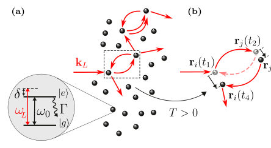
<figcaption class="paper-figure-caption"><b>Fig 1.</b> FIG. 1. (a) Light scattering of a laser field with wave number kL = ωL/c by a system of two-level atoms with ground-state |g⟩and excited state |e⟩. The atoms are characterized by their resonance frequency ω0 and decay rate Γ. As the atomic den- sity increases, recurrent scattering processes associated with induced dipole-dipole interactions become significant, leading to a collective response of the atomic cloud. (b) At finite temperature, atomic motion between successive recurrent- scattering events introduces random phase shifts that tend to suppress the collective scattering contribution.</figcaption>
</figure>
<figure class="paper-figure-card">
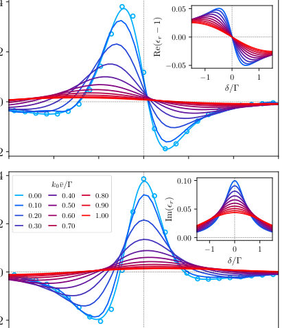
<figcaption class="paper-figure-caption"><b>Fig 2.</b> FIG. 3. (a) Real part and (b) imaginary part of the IDDC contribution δϵ × (k0ℓ0)2 to the permittivity of the atomic cloud as a function of the laser detuning δ/Γ, for increasing values of the Doppler broadening k0¯v/Γ from top to bottom. Blue circles show the predictions of coupled-dipole simulations at zero temperature. Insets: real and imaginary parts of the full permittivity ϵr = ϵISA + δϵ, shown for an exemplary case with k0ℓ0 = 10.</figcaption>
</figure>
<figure class="paper-figure-card">
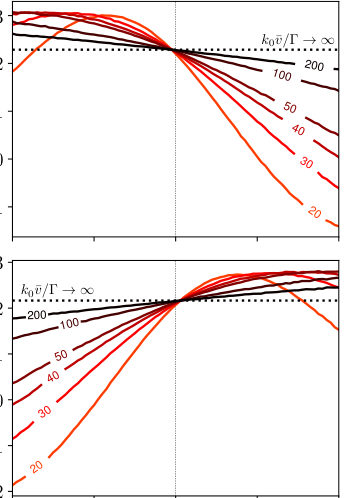
<figcaption class="paper-figure-caption"><b>Fig 3.</b> FIG. 5. Real (a) and imaginary (b) part of δϵ × (k0ℓ0)2(k0¯v/Γ)3 as a function of detuning δ/Γ, for large val- ues of k0¯v/Γ (solid curves). The curves were obtained by computing δϵ using the single-loop diagram only, an excellent approximation at high temperature. The dotted lines are the asymptotic limits, respectively given by Eqs. (34) and (35).</figcaption>
</figure>
<figure class="paper-figure-card">
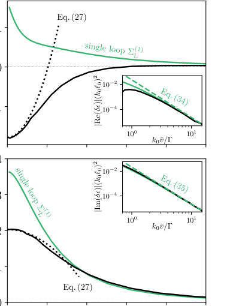
<figcaption class="paper-figure-caption"><b>Fig 4.</b> FIG. 4. Real (a) and imaginary (b) parts of δϵ × (k0ℓ0)2</figcaption>
</figure>
<figure class="paper-figure-card">
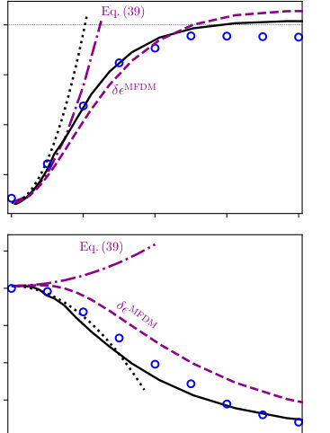
<figcaption class="paper-figure-caption"><b>Fig 5.</b> FIG. 6. Comparison of the exact theoretical result (25) (solid curves), coupled-dipole simulations (blue circles), and MFDM prediction (38) (dashed curves) for the real (a) and imaginary (b) parts of δϵ together with the low-temperature expansion (dash-dotted line) as a function of the Doppler width. The detuning is fixed at δ/Γ = 0.2.</figcaption>
</figure>
</div>

<p><strong>Summary.</strong> This paper presents a microscopic theory for the optical response of dilute atomic clouds at finite temperatures. It rigorously accounts for the suppression of collective light-induced dipole-dipole interactions due to thermal motion. The key finding is the continuous crossover of the resonance shift from the quantum Lamb shift at low T to the classical Lorentz-Lorenz shift at high T.</p>
<p><strong>Why it may be interesting.</strong> This work is highly relevant to quantum optics and AMO physics as it provides a quantitative, microscopic understanding of how thermal decoherence affects collective quantum light-matter interactions, bridging the gap between quantum collective effects and classical limits.</p>
<details>
<summary>Detailed structure</summary>
<p><strong>Main problem.</strong> The paper develops a microscopic theory to describe how thermal motion suppresses collective light-induced dipole-dipole interactions in dilute atomic clouds.</p>
<p><strong>Main result.</strong> It shows that the resonance shift continuously evolves from the low-temperature collective Lamb shift to the high-temperature classical Lorentz-Lorenz shift, providing an exact description of finite-temperature corrections.</p>
<p><strong>Method.</strong> The authors use a diagrammatic approach based on the Lippmann-Schwinger equation to derive the collective contribution to the optical permittivity, comparing analytical results with coupled-dipole simulations.</p>
<p><strong>Model / system.</strong> The system is a dilute atomic gas of two-level atoms treated as an effectively infinite, translationally invariant medium. Atomic motion is modeled using ballistic trajectories under thermal equilibrium.</p>
<p><strong>Key observables.</strong> Optical permittivity, refractive index, extinction coefficient, and the resonance shift.</p>
<p><strong>Important parameters / regimes.</strong> Temperature (T), density (n), and the ratio of thermal velocity to decay rate ($ar{v}/\Gamma$).</p>
<p><strong>Assumptions / limitations.</strong> The analysis initially uses a scalar approximation for the optical field and assumes the ballistic approximation for atomic motion.</p>
<p><strong>Figures summary.</strong> Figures illustrate light scattering, showing how increasing density leads to collective response, and how finite temperature introduces random phase shifts that suppress this collective scattering.</p>
<p><strong>Paper structure.</strong> The paper builds from the general theory of the optical response using the Lippmann-Schwinger equation, derives the self-energy contributions ($\Sigma_L$ and $\Sigma_B$) via diagrammatic expansion, and then analyzes the asymptotic limits (low and high temperature) for these contributions.</p>
</details>
<details>
<summary>Abstract</summary>
<p>At low temperature, collective light-induced dipole-dipole interactions are known to strongly reshape the optical response of atomic clouds, revealing the breakdown of the independent-scattering picture as the density increases. While thermal motion is generally believed to progressively suppress these interactions, the microscopic mechanisms behind this suppression remain largely unexplored. Here, we develop a microscopic theory of the optical response of a dilute atomic gas at finite temperature, explicitly accounting for atomic ballistic motion during the recurrent-scattering events associated with the collective corrections. Using a diagrammatic approach for scalar light, we derive the collective contribution to the optical permittivity and characterize its behavior across the full temperature range. We find that thermal corrections scale as $\sim T$ at low temperature, while recurrent-scattering contributions are suppressed as $\sim T^{-3/2}$ at high temperature. Our predictions are confirmed by extensive coupled-dipole simulations that explicitly account for atomic motion. These simulations also reveal the inaccuracy of the modified frozen-dipole approximation commonly used to treat thermal effects. Finally, extending our theory to vector light, we provide a complete picture of how the resonance shift continuously evolves from the collective Lamb shift at low temperatures to the classical Lorentz-Lorenz shift at high temperatures.</p>
</details>
<p><sub><a href="#top">↑ back to top</a></sub></p>

<p><a id="paper-2609.28662"></a></p>
<h3 id="universal-holonomic-control-of-algebras-of-observables"><a href="http://arxiv.org/abs/2609.28662v1">Universal holonomic control of algebras of observables</a></h3>
<p><strong>Authors:</strong> Paolo Zanardi<br>
<strong>Type:</strong> theory · <strong>Category:</strong> quantum information and computing · <strong>PDF:</strong> <a href="https://arxiv.org/pdf/2609.28662v1">https://arxiv.org/pdf/2609.28662v1</a><br>
<strong>Analysis basis:</strong> full PDF text, analyzed in chunks
<strong>Topic relevance:</strong> <code>quantum measurements</code> <strong>2/5</strong> · <code>analog quantum simulation</code> <strong>1/5</strong></p>
<div class="figure-strip-hint">↔ Scroll figures horizontally</div>
<div class="paper-figures-scroll">
<figure class="paper-figure-card">
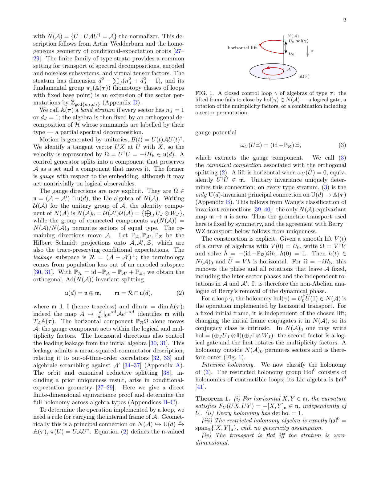
<figcaption class="paper-figure-caption"><b>Fig 1.</b> Low-resolution page preview, page 2</figcaption>
</figure>
<figure class="paper-figure-card">
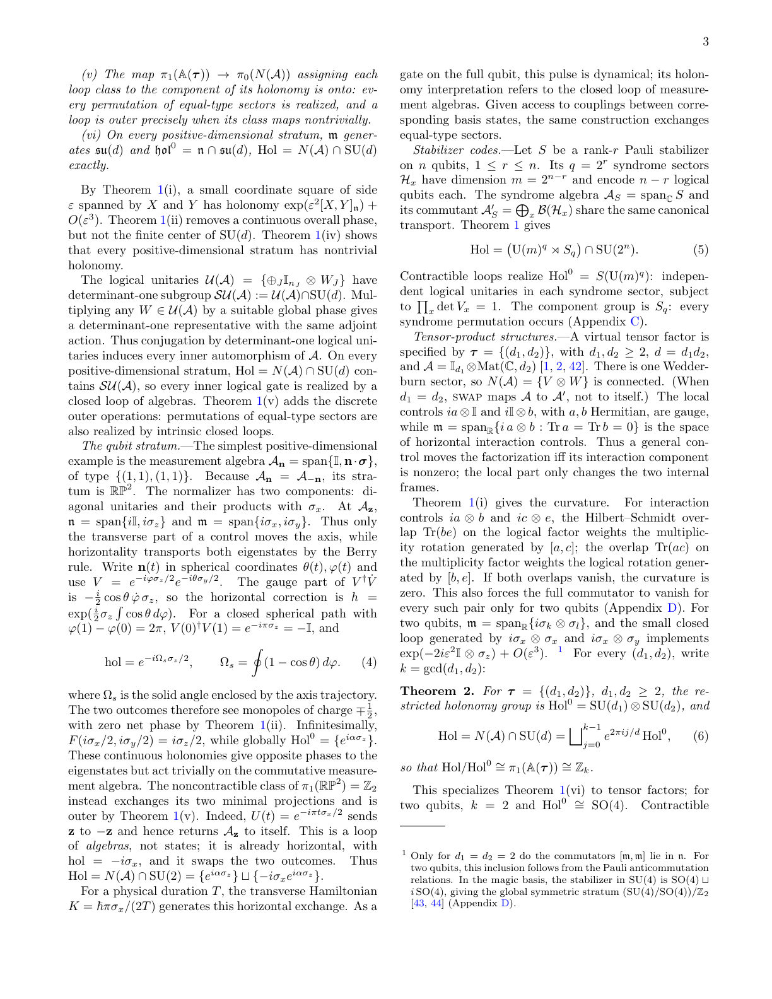
<figcaption class="paper-figure-caption"><b>Fig 2.</b> Low-resolution page preview, page 3</figcaption>
</figure>
<figure class="paper-figure-card">
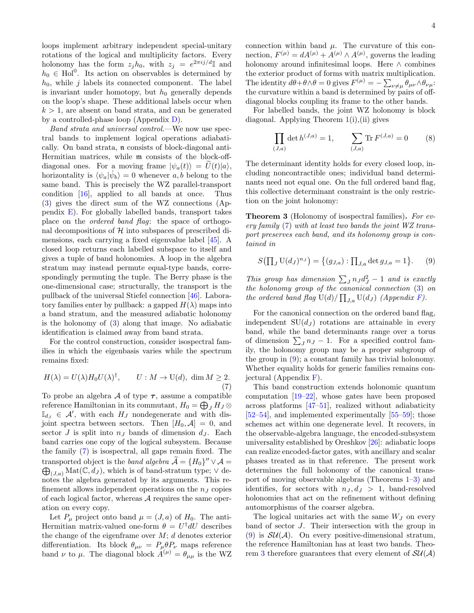
<figcaption class="paper-figure-caption"><b>Fig 3.</b> Low-resolution page preview, page 4</figcaption>
</figure>
<figure class="paper-figure-card">
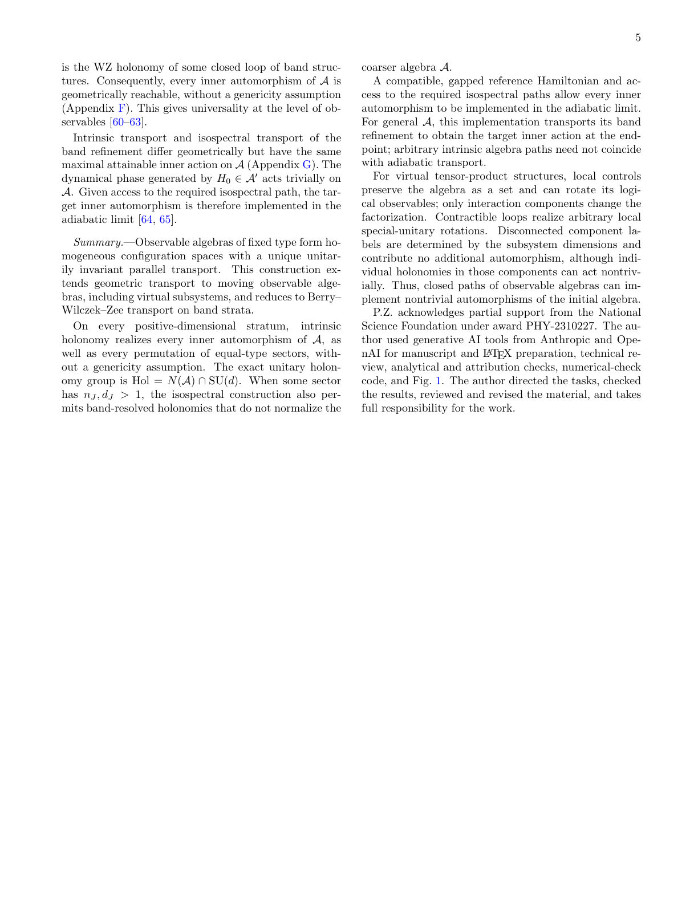
<figcaption class="paper-figure-caption"><b>Fig 4.</b> Low-resolution page preview, page 5</figcaption>
</figure>
<figure class="paper-figure-card">
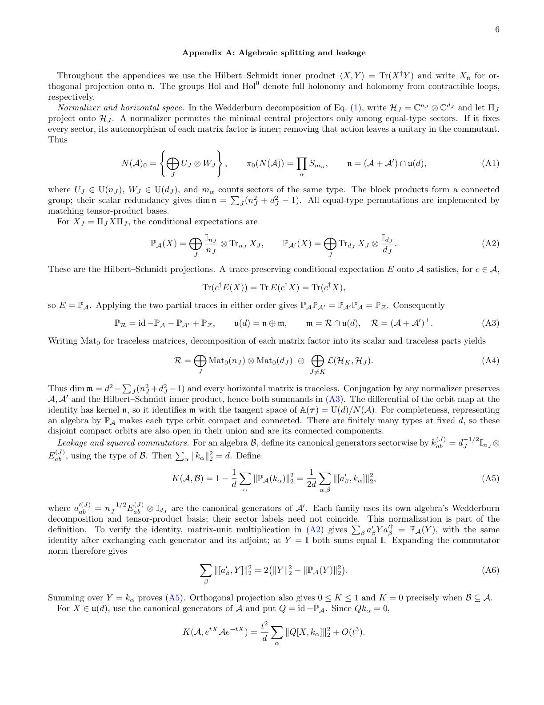
<figcaption class="paper-figure-caption"><b>Fig 5.</b> Low-resolution page preview, page 6</figcaption>
</figure>
</div>

<p><strong>Summary.</strong> This paper develops a geometric theory for controlling quantum systems by analyzing the parallel transport of observable algebras along closed paths. It proves that this holonomy mechanism can universally implement all necessary logical gates and sector permutations. This establishes a rigorous link between the geometry of the observable space and the computational power of the quantum system.</p>
<p><strong>Why it may be interesting.</strong> This work provides a deep geometric framework connecting the algebraic structure of quantum observables to the realizable unitary operations, offering a powerful tool for designing quantum gates.</p>
<details>
<summary>Detailed structure</summary>
<p><strong>Main problem.</strong> The paper addresses the geometric problem of determining how observable algebras must be transported (parallel transported) when the algebra itself undergoes a closed path evolution in the space of observables.</p>
<p><strong>Main result.</strong> It shows that the parallel transport is uniquely fixed by unitary invariance, recovering Berry–Wilczek–Zee transport, and that closed paths can realize every inner logical gate and sector permutation on positive-dimensional strata.</p>
<p><strong>Method.</strong> The analysis employs geometric control theory, defining a canonical connection and calculating the holonomy group associated with the evolution of the observable algebra structure.</p>
<p><strong>Model / system.</strong> The system involves quantum states described by observable algebras $A$, analyzed using the Artin–Wedderburn decomposition. The control is achieved via paths in the space of these algebras, often related to band structures derived from gapped Hamiltonians.</p>
<p><strong>Key observables.</strong> Holonomy ($    ext{hol}(\gamma)$), inner logical gates, sector permutations, and the curvature $F(\mu)$ of the connection.</p>
<p><strong>Important parameters / regimes.</strong> The structure of the algebra (fixed block structure $   au$), the existence of a compatible gapped Hamiltonian, and the path taken ($\gamma$).</p>
<p><strong>Assumptions / limitations.</strong> The results are derived for algebras with a fixed block structure, and the adiabatic implementation relies on the existence of required control paths.</p>
<p><strong>Figures summary.</strong> Figure 1 illustrates the concept of holonomy for a closed control loop, showing how the failure of the lifted frame to close results in a non-trivial holonomy element belonging to $N(A)$.</p>
<p><strong>Paper structure.</strong> The paper builds from defining the geometric problem of transport on observable algebras, deriving the canonical connection, calculating the holonomy for closed loops, and finally proving that these holonomies realize universal gates under adiabatic control.</p>
</details>
<details>
<summary>Abstract</summary>
<p>Closed paths of observable algebras can enact logical gates. We show that algebras of fixed block structure have a unique unitarily invariant parallel transport, recovering Berry--Wilczek--Zee transport on bands. On positive-dimensional configuration spaces, the holonomy group is the special-unitary part of the normalizer: every inner logical gate and every equal-type sector permutation is attainable. Given a compatible gapped Hamiltonian and access to the required paths, inner logical gates can be implemented adiabatically by isospectral control of a band refinement.</p>
</details>
<p><sub><a href="#top">↑ back to top</a></sub></p>

<p><a id="paper-2609.29954"></a></p>
<h3 id="all-you-need-is-the-universal-correlation-detector-a-unified-approach-to-universalize-communication-protocols-over-quantum-channels"><a href="http://arxiv.org/abs/2609.29954v1">All you need is the universal correlation detector: A unified approach to universalize communication protocols over quantum channels</a></h3>
<p><strong>Authors:</strong> Kaito Watanabe, Takaya Matsuura, Ryuji Takagi<br>
<strong>Type:</strong> theory · <strong>Category:</strong> quantum information and computing · <strong>PDF:</strong> <a href="https://arxiv.org/pdf/2609.29954v1">https://arxiv.org/pdf/2609.29954v1</a><br>
<strong>Analysis basis:</strong> full PDF text, analyzed in chunks
<strong>Topic relevance:</strong> <code>quantum measurements</code> <strong>2/5</strong></p>
<div class="figure-strip-hint">↔ Scroll figures horizontally</div>
<div class="paper-figures-scroll">
<figure class="paper-figure-card">
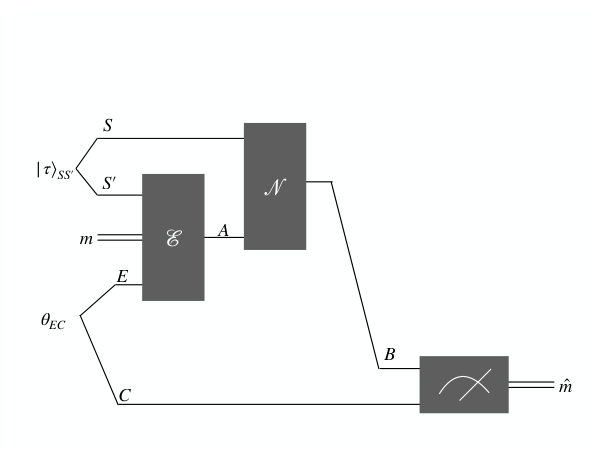
<figcaption class="paper-figure-caption"><b>Fig 1.</b> FIG. 1. Schematic illustration of quantum Gel’fand-Pinsker channel coding. The state of the quantum channel N varies depending on the register 𝑆, and the encoder is given access to another register 𝑆′, which is correlated with the channel state 𝑆.</figcaption>
</figure>
<figure class="paper-figure-card">
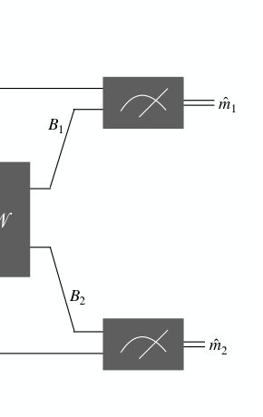
<figcaption class="paper-figure-caption"><b>Fig 2.</b> FIG. 2. Schematic illustration of an entanglement-assisted quantum broadcast channel with two receivers.</figcaption>
</figure>
</div>

<p><strong>Summary.</strong> This paper introduces universal correlation detection as a foundational tool for quantum communication. By developing detectors that work optimally even when the exact quantum state or channel is unknown, the authors provide a unified framework. This allows for the systematic design of capacity-achieving coding schemes for various tasks over unknown quantum channels.</p>
<p><strong>Why it may be interesting.</strong> The concept of universal detection methods is highly relevant for open quantum systems and quantum optics, as many real-world scenarios involve unknown noise channels or unknown initial states, making state-agnostic protocols crucial.</p>
<details>
<summary>Detailed structure</summary>
<p><strong>Main problem.</strong> The central challenge is constructing optimal quantum information protocols when the underlying quantum states or communication channels are unknown or partially known.</p>
<p><strong>Main result.</strong> The authors developed universal correlation detectors that achieve optimal first-order asymptotic performance, enabling the construction of channel-independent coding schemes that achieve capacity for various quantum communication tasks.</p>
<p><strong>Method.</strong> The approach involves developing universal correlation detection as a common building block, combining it with position-based decoding and convex splitting techniques.</p>
<p><strong>Model / system.</strong> The work analyzes bipartite quantum states ($
ho_{AB}$), classical-quantum states ($
ho_{XB}$), and general quantum channels, focusing on the detection of correlations.</p>
<p><strong>Key observables.</strong> Mutual information $I(A:B)$, total correlation $I[S]$, and the performance of quantum hypothesis testing (Type I/Type II error rates).</p>
<p><strong>Important parameters / regimes.</strong> The asymptotic performance is characterized by the first-order limit of the hypothesis testing divergence, $n$ (number of copies), and the marginal state information.</p>
<p><strong>Assumptions / limitations.</strong> The work addresses the need for 'state-agnostic' or 'universal' detection, moving beyond the assumption of complete knowledge about the system state.</p>
<p><strong>Paper structure.</strong> The paper introduces the problem of unknown channels, develops the universal correlation detector, proves its optimality for both general and classical-quantum states, and finally combines this detector with decoding techniques to construct capacity-achieving coding schemes for multiple tasks.</p>
</details>
<details>
<summary>Abstract</summary>
<p>Constructing optimal quantum information protocols without complete knowledge of the underlying states or channels is a central challenge. We address this challenge by developing universal correlation detection as a common building block for quantum communication. Our detectors distinguish a bipartite state from the product of its marginals and attain the same first-order asymptotic performance as optimal tests constructed with complete state information. For general bipartite quantum states, knowledge of a single marginal suffices: a detector depending only on that marginal is first-order optimal for every compatible state. For classical-quantum states, the detector is fully universal and requires no prior state information. By combining these detectors with position-based decoding and convex splitting, we construct channel-independent coding schemes that achieve capacity for a range of communication tasks. These results turn universal correlation detection into a systematic tool for universal protocol design, providing a unified route to designing capacity-achieving protocols for many communication tasks over unknown quantum channels.</p>
</details>
<p><sub><a href="#top">↑ back to top</a></sub></p>

<p><a id="paper-2609.29388"></a></p>
<h3 id="differential-hierarchy-of-the-husimi-representation"><a href="http://arxiv.org/abs/2609.29388v1">Differential hierarchy of the Husimi representation</a></h3>
<p><strong>Authors:</strong> Zacharie Van Herstraeten, Ulysse Chabaud<br>
<strong>Type:</strong> theory · <strong>Category:</strong> other · <strong>PDF:</strong> <a href="https://arxiv.org/pdf/2609.29388v1">https://arxiv.org/pdf/2609.29388v1</a><br>
<strong>Analysis basis:</strong> full PDF text, analyzed in chunks
<strong>Topic relevance:</strong> <code>quantum measurements</code> <strong>2/5</strong></p>
<div class="figure-strip-hint">↔ Scroll figures horizontally</div>
<div class="paper-figures-scroll">
<figure class="paper-figure-card">
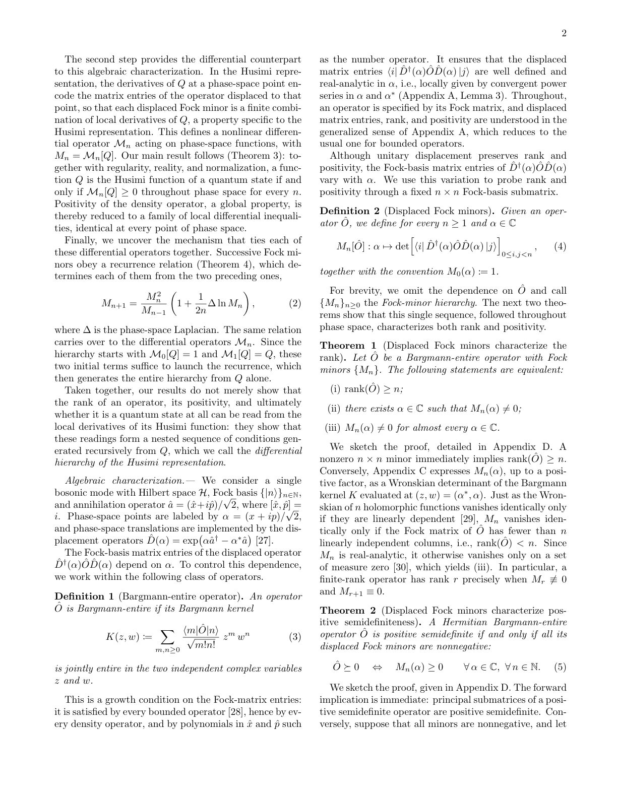
<figcaption class="paper-figure-caption"><b>Fig 1.</b> Low-resolution page preview, page 2</figcaption>
</figure>
<figure class="paper-figure-card">
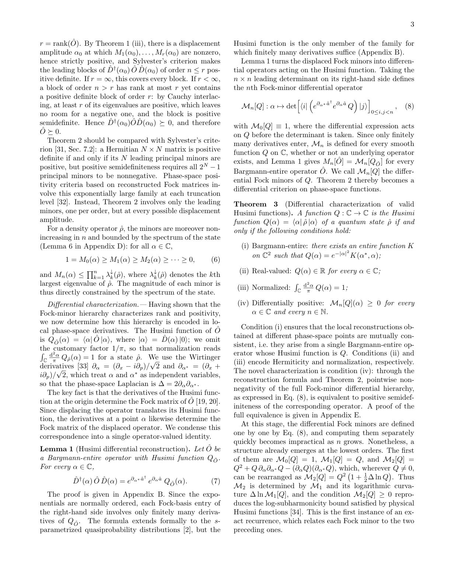
<figcaption class="paper-figure-caption"><b>Fig 2.</b> Low-resolution page preview, page 3</figcaption>
</figure>
<figure class="paper-figure-card">
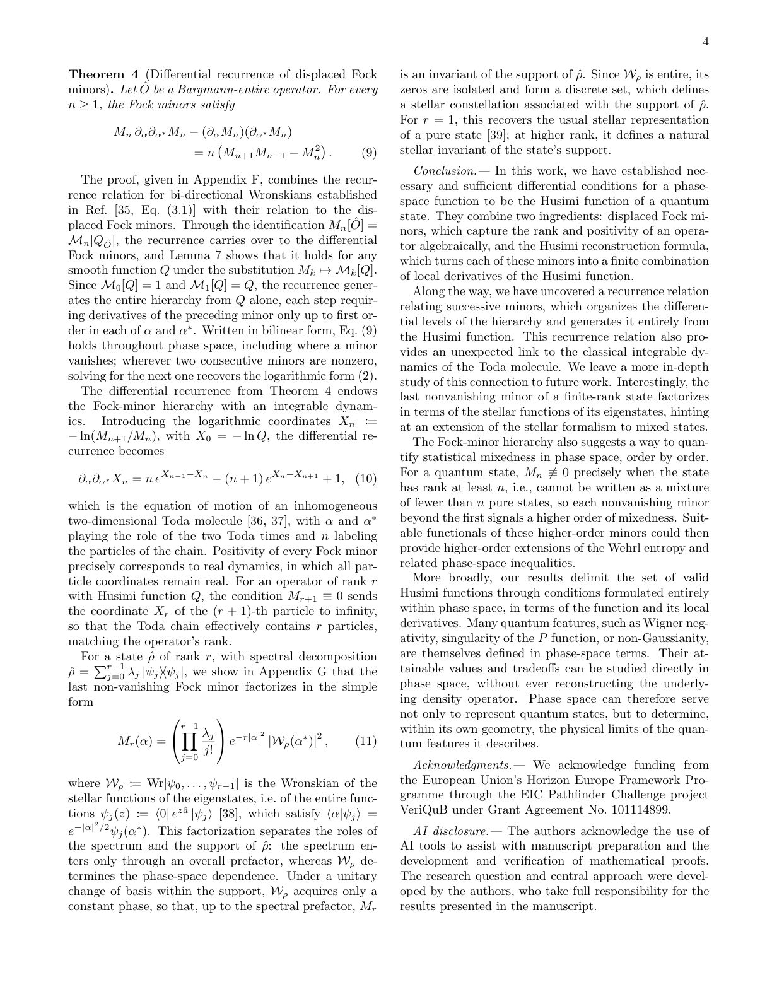
<figcaption class="paper-figure-caption"><b>Fig 3.</b> Low-resolution page preview, page 4</figcaption>
</figure>
<figure class="paper-figure-card">
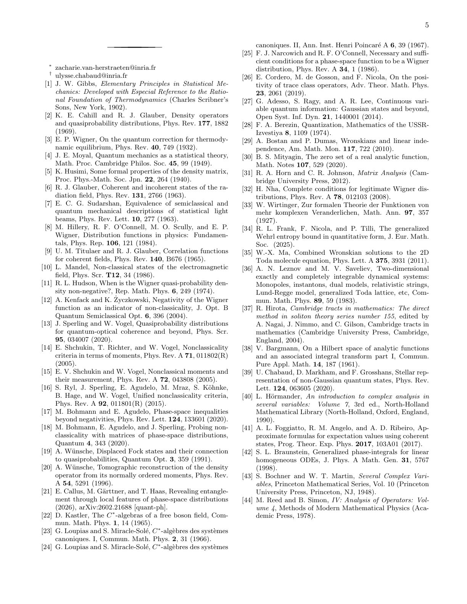
<figcaption class="paper-figure-caption"><b>Fig 4.</b> Low-resolution page preview, page 5</figcaption>
</figure>
<figure class="paper-figure-card">
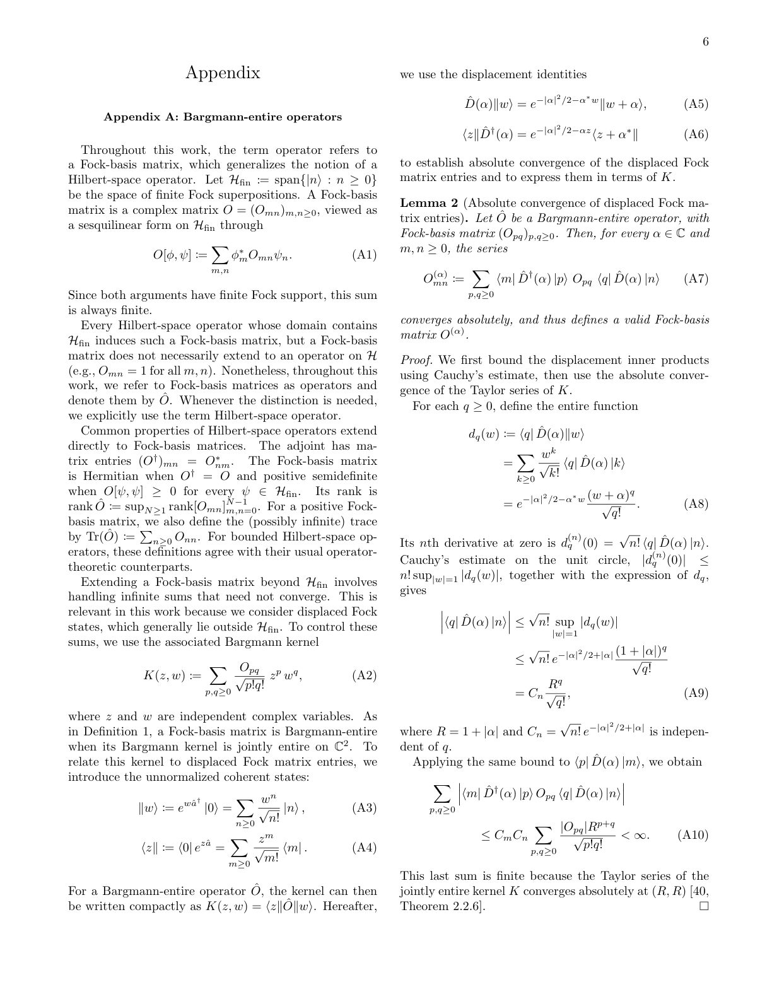
<figcaption class="paper-figure-caption"><b>Fig 5.</b> Low-resolution page preview, page 6</figcaption>
</figure>
</div>

<p><strong>Summary.</strong> This paper develops a novel, local criterion for determining if a phase-space function is a valid Husimi representation of a quantum state. By establishing a differential hierarchy based on recursively defined Fock minors, it shows that global quantum properties like positivity and operator rank can be determined solely by checking local differential inequalities on the function. This offers a powerful geometric tool for quantum state characterization.</p>
<p><strong>Why it may be interesting.</strong> This work provides a powerful, purely local, and differential geometric criterion for verifying quantum state properties (like positivity and rank) directly from a phase-space function, which is highly valuable for theoretical quantum optics and open quantum systems.</p>
<details>
<summary>Detailed structure</summary>
<p><strong>Main problem.</strong> The paper addresses the difficulty of using phase-space representations to verify the fundamental quantum mechanical property of density operator positivity, which typically requires global conditions.</p>
<p><strong>Main result.</strong> It establishes that the condition for a phase-space function to be a valid Husimi function is equivalent to a set of local, differential inequalities forming a differential hierarchy.</p>
<p><strong>Method.</strong> The authors relate the algebraic characterization of quantum operators (via displaced Fock minors) to local differential conditions on the Husimi function, leading to a recurrence relation analogous to the Toda molecule equation.</p>
<p><strong>Model / system.</strong> The study concerns general quantum states ($\hat{
ho}$) and operators ($\hat{O}$) represented in phase space via the Husimi Q-function. The analysis is performed using the framework of Bargmann-entire operators and coherent states.</p>
<p><strong>Key observables.</strong> The primary observables are the displaced Fock minors ($M_n(\alpha)$) and the local derivatives of the Husimi function $Q(\alpha)$.</p>
<p><strong>Important parameters / regimes.</strong> The rank of the operator ($ ext{rank}(\hat{O})$) and the degree of positivity are characterized by the highest non-vanishing minor in the hierarchy.</p>
<p><strong>Assumptions / limitations.</strong> The analysis assumes the operator is Bargmann-entire and relies on formal identities connecting minors to local derivatives, though convergence in some reconstruction formulas is noted as a limitation.</p>
<p><strong>Figures summary.</strong> The notes do not describe specific figures, but detail the mathematical structure involving recurrence relations (e.g., Equation 2, Equation 10) and determinant identities.</p>
<p><strong>Paper structure.</strong> The paper builds by first defining the problem (global vs. local positivity), then introducing the algebraic tools (Fock minors, rank characterization), and finally deriving the differential hierarchy by showing that these minors satisfy a specific recurrence relation, linking the structure to integrable systems.</p>
</details>
<details>
<summary>Abstract</summary>
<p>Phase-space representations reveal the geometry of quantum mechanics and distinguish quantum features from classical ones. However, the positivity of a density operator is among the properties of quantum states that phase-space representations capture least directly: deciding whether a phase-space function describes a physical quantum state has so far required global conditions coupling distant points in phase space. Here we show that these conditions can in fact be made local, by considering the Husimi representation in phase space. We establish a complete set of conditions which captures when a phase-space function $f$ is the Husimi function of a quantum state, with each condition involving only the derivatives of the function $f$ evaluated at a single phase-space point. We further show that each condition has an equivalent algebraic characterization, which takes the form of the nonnegativity of a determinant of the underlying operator in a displaced Fock basis. As a result, these conditions obey a recurrence relation organizing them into a differential hierarchy, which terminates based on the rank of the operator. Our results thus show that operator rank and positivity are local properties in phase space, reinforcing the role of phase-space representations as a geometric description of quantum mechanics.</p>
</details>
<p><sub><a href="#top">↑ back to top</a></sub></p>

<p><a id="paper-2609.29271"></a></p>
<h3 id="full-frequency-gw-from-cayley-transformed-self-energy-moments"><a href="http://arxiv.org/abs/2609.29271v1">Full-frequency GW from Cayley-transformed self-energy moments</a></h3>
<p><strong>Authors:</strong> Marcus K. Allen, George H. Booth<br>
<strong>Type:</strong> theory · <strong>Category:</strong> strongly correlated electrons · <strong>PDF:</strong> <a href="https://arxiv.org/pdf/2609.29271v1">https://arxiv.org/pdf/2609.29271v1</a><br>
<strong>Analysis basis:</strong> full PDF text, analyzed in chunks
<strong>Topic relevance:</strong> <code>Keldysh / 2PI / non-Gaussian methods</code> <strong>2/5</strong></p>
<div class="figure-strip-hint">↔ Scroll figures horizontally</div>
<div class="paper-figures-scroll">
<figure class="paper-figure-card">
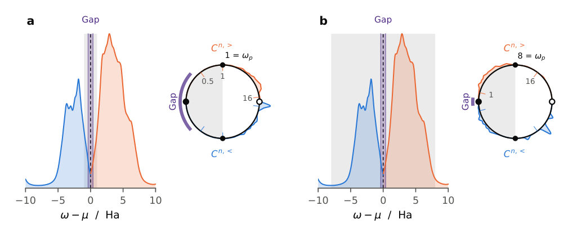
<figcaption class="paper-figure-caption"><b>Fig 1.</b> FIG. 1. Depiction of the Cayley map for the exact G0W0@PBE self-energy spectrum of carbon monoxide in a cc-pVDZ basis. (a) The mapping from real-frequency spectrum on the left (with Lorentzian broadening of 0.35 Ha for visualization) to the Cayley transformed unit circle on the right, with ωp = 1 Ha mapping µ ± 1 7→±i. (b) The same, but with ωp = 8 Ha. In each pair, the purple shaded frequency window / arc length denotes the self-energy ‘gap’ around the chemical potential (µ ± 0.38172 Ha) where there are no self-energy poles, while the grey shaded frequency window / negative real part of the Cayley transform represents the frequencies where |ω −µ| ≤ωp, showing how the angular resolution...</figcaption>
</figure>
<figure class="paper-figure-card">
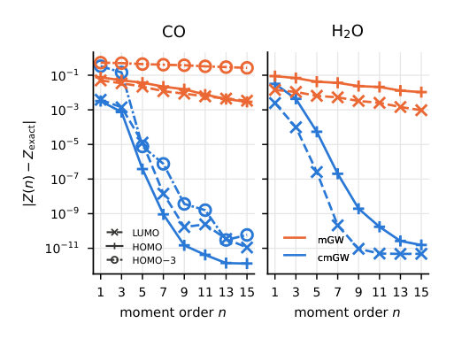
<figcaption class="paper-figure-caption"><b>Fig 2.</b> FIG. 3. Convergence of moment truncation, showing G0W0@PBE quasiparticle weight error with maximum con- served moment order n, with |Z(n) −Zexact| on a logarith- mic axis for carbon monoxide (left) and water (right), against the same untruncated exact reference as Figure 2, compar- ing monomial mGW (orange) and Cayley cmGW (blue) mo- ment conservation. We also include a third low-weight state (HOMO-3) of CO with Z = 0.39, which is split from the ref- erence quasiparticle and sits 3.91 eV below the HOMO.</figcaption>
</figure>
<figure class="paper-figure-card">
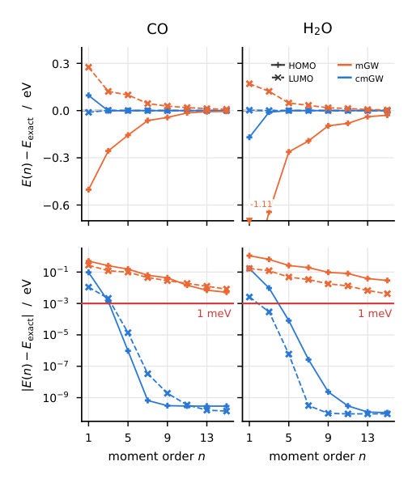
<figcaption class="paper-figure-caption"><b>Fig 3.</b> FIG. 2. Convergence of moment truncation, showing fron- tier quasiparticle error with maximum conserved moment or- der n for carbon monoxide (left) and water (right). Top row: signed error E(n) −Eexact on a linear axis, compar- ing monomial moment (mGW, orange) and Cayley moment (cmGW, blue) convergence to ‘exact’ (untruncated) G0W0 re- sults. Bottom row: the absolute excitation energy error on a logarithmic axis, with the red line marking 1 meV. HOMO is drawn solid, LUMO dashed. All results are G0W0@PBE in cc-pVDZ basis, with ωp = 1 Ha for the Cayley map.</figcaption>
</figure>
<figure class="paper-figure-card">
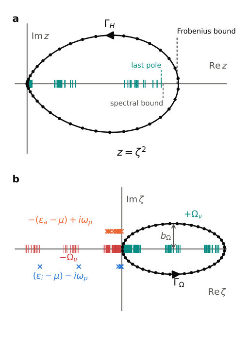
<figcaption class="paper-figure-caption"><b>Fig 4.</b> FIG. 4. The quadrature contour of carbon monoxide in a cc-pVDZ basis with a PBE reference and ωp = 1 Ha, (a) in the z ‘squared frequency’ space of the resolvent of Eq. 30, with poles at the excitation energies +Ω2 ν on the positive real axis, with two different spectral bounding methods shown to define the contour (‘Frobenius’ and ‘spectral’ see discussion in Appendix A for more details), (b) the same contour ΓΩ, now elliptical, in the ζ = √z excitation-energy space where the integration is performed, with RPA poles shown as ±Ων on the real axis, and the two sets of Cayley poles at −ϵa +µ+iωp and ϵi−µ−iωp. The contour parameter bΩis shown to control the vertical semi-axis of the chosen...</figcaption>
</figure>
<figure class="paper-figure-card">
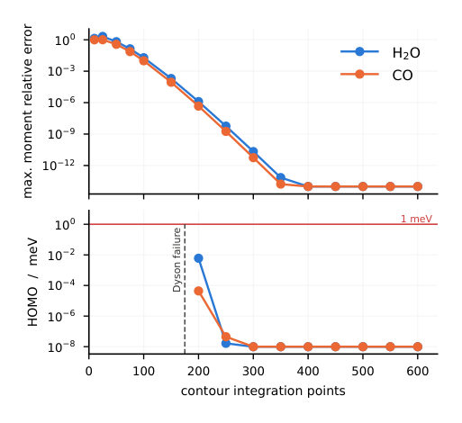
<figcaption class="paper-figure-caption"><b>Fig 5.</b> FIG. 5. Exponential convergence of the Cayley moments with number of contour integration points through n = 11 con- served moments, for water (blue) and carbon monoxide (or- ange), HF reference / def2-TZVPP basis (ωp = 1 Ha). Er- rors are computed against reference results from a 2048-point contour integration. Results below 10−14 and 10−8 meV re- spectively are pinned there for presentational purposes, so the smooth plateau is imposed, not a physical measurement. Top: the maximum element of the relative error in the mo- ment matrices across the full set of particle and hole mo- ments. It reaches numerical precision limits around 400 con- tour points. Bottom: the resulting shift in the G0W0...</figcaption>
</figure>
</div>

<p><strong>Summary.</strong> This paper introduces a novel method to calculate the full-frequency GW self-energy by reformulating spectral moments using a Cayley transformation. This technique ensures numerical stability and achieves significantly faster convergence compared to prior moment-based approaches. It provides a robust, grid-free route to obtaining complete spectral information for electronic systems.</p>
<p><strong>Why it may be interesting.</strong> The development of highly accurate, non-perturbative spectral methods for electronic structure is crucial for understanding strongly correlated materials where simple approximations fail.</p>
<details>
<summary>Detailed structure</summary>
<p><strong>Main problem.</strong> To develop a stable, compact, and systematically improvable method for calculating the full-frequency Green's function ($G_0W_0$) spectrum of electronic systems, overcoming limitations of existing GW approximations.</p>
<p><strong>Main result.</strong> The use of Cayley-transformed moment constraints provides a representation that converges substantially faster and more reliably than previous monomial moment approaches, allowing for the calculation of the full spectral information.</p>
<p><strong>Method.</strong> The authors reformulate the GW self-energy moments using a Cayley transformation, which maps real frequencies to the unit circle. These moments are calculated via efficient contour integration and used to construct and diagonalize a Hermitian upfolded Hamiltonian.</p>
<p><strong>Model / system.</strong> The theory is applied to general electronic systems, benchmarked on molecular calculations like Chlorophyll A. The underlying physics involves calculating the $G_0W_0$ self-energy ($\Sigma(\omega)$) within the framework of many-body perturbation theory.</p>
<p><strong>Key observables.</strong> Full-frequency $G_0W_0$ Green's function, quasiparticle energies, satellite features, and their spectral weights.</p>
<p><strong>Important parameters / regimes.</strong> Moment order ($n$), Cayley scale ($\omega_p$), and contour integration parameters ($\sigma$).</p>
<p><strong>Assumptions / limitations.</strong> The method assumes the ability to compute moments via contour integration and relies on the Cayley map to ensure moment boundedness and numerical stability.</p>
<p><strong>Figures summary.</strong> Figures compare the convergence of excitation energies (HOMO/LUMO) using the new Cayley moment expansion (cmGW) versus the old monomial expansion (mGW), showing superior convergence for cmGW. Another figure shows the spectral function of Chlorophyll A for various moment orders.</p>
<p><strong>Paper structure.</strong> The paper reviews previous monomial moment expansions, details the calculation of the new Cayley-transformed moments via contour integration, describes implementing Dyson's equation using the moment-conserving upfolded Hamiltonian, and presents convergence results.</p>
</details>
<details>
<summary>Abstract</summary>
<p>The dynamical GW self-energy approximation is a key computational tool to provide the fundamental spectrum of electronic systems. We reformulate this approximation, representing the particle and hole parts of the GW self-energy through a highly compact set of Cayley-transformed moment constraints. The Cayley transformation maps real frequencies to the unit circle, keeping the moments bounded as their order increases, ensuring numerical stability and allowing resolution to be focused on an energy range of interest. We calculate these Cayley-transformed moments via an efficient O[N$^4$] scaling contour integration, and from them, construct a Hermitian upfolded Hamiltonian with a linearly scaling dimensionality with system size. A single-shot diagonalization of this effective Hamiltonian gives an explicit full-frequency G0W0 Green's function with manifestly real poles and non-negative spectral weights. This enables quasiparticle energies, satellite features, and their spectral weights to be obtained across the full G0W0 spectrum. Comparisons with exact G0W0 calculations and convergence across the GW100 test set and the larger Chlorophyll A molecule demonstrate substantially faster and more reliable convergence with moment order than an earlier monomial-moment approach. These Cayley moment representations therefore provide a stable, compact, and systematically improvable route to the complete spectral information of zero-temperature GW, without explicit frequency grids, plasmon-pole models and other common approximations, or analytic continuation.</p>
</details>
<p><sub><a href="#top">↑ back to top</a></sub></p>

<p><a id="paper-2609.30253"></a></p>
<h3 id="how-not-to-build-microcrypt"><a href="http://arxiv.org/abs/2609.30253v1">How Not to Build Microcrypt</a></h3>
<p><strong>Authors:</strong> Aditya Gulati, Dakshita Khurana, Kabir Tomer<br>
<strong>Type:</strong> theory · <strong>Category:</strong> quantum information and computing · <strong>PDF:</strong> <a href="https://arxiv.org/pdf/2609.30253v1">https://arxiv.org/pdf/2609.30253v1</a><br>
<strong>Analysis basis:</strong> full PDF text, analyzed in chunks
<strong>Topic relevance:</strong> <code>quantum measurements</code> <strong>2/5</strong></p>
<div class="figure-strip-hint">↔ Scroll figures horizontally</div>
<div class="paper-figures-scroll">
<figure class="paper-figure-card">
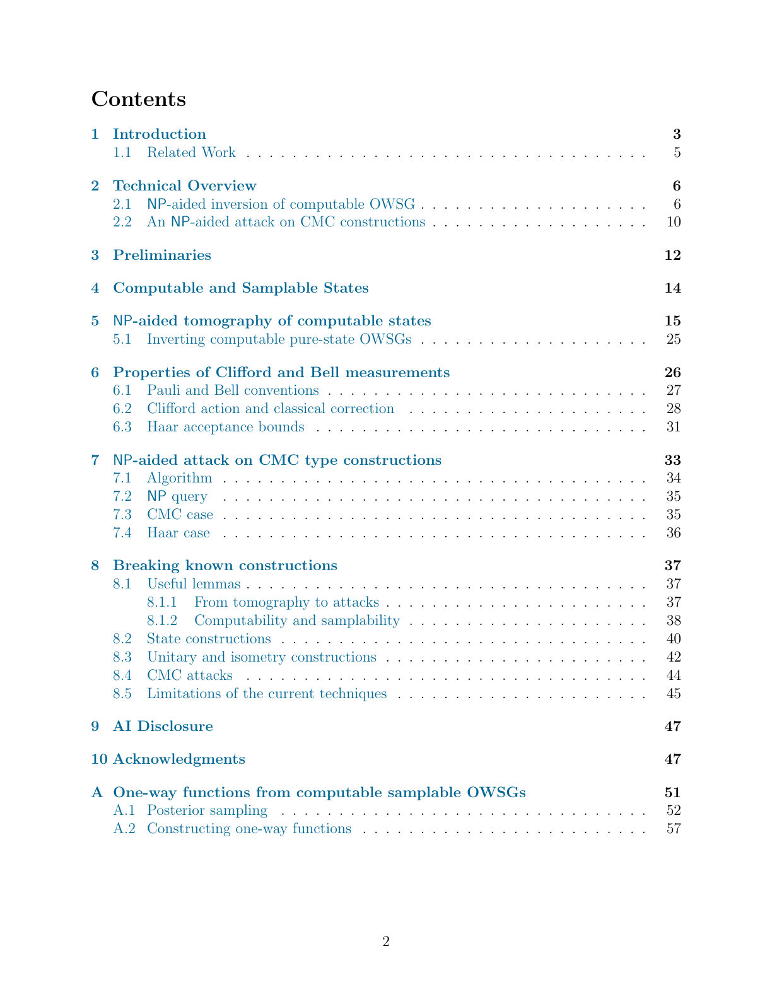
<figcaption class="paper-figure-caption"><b>Fig 1.</b> Low-resolution page preview, page 2</figcaption>
</figure>
<figure class="paper-figure-card">
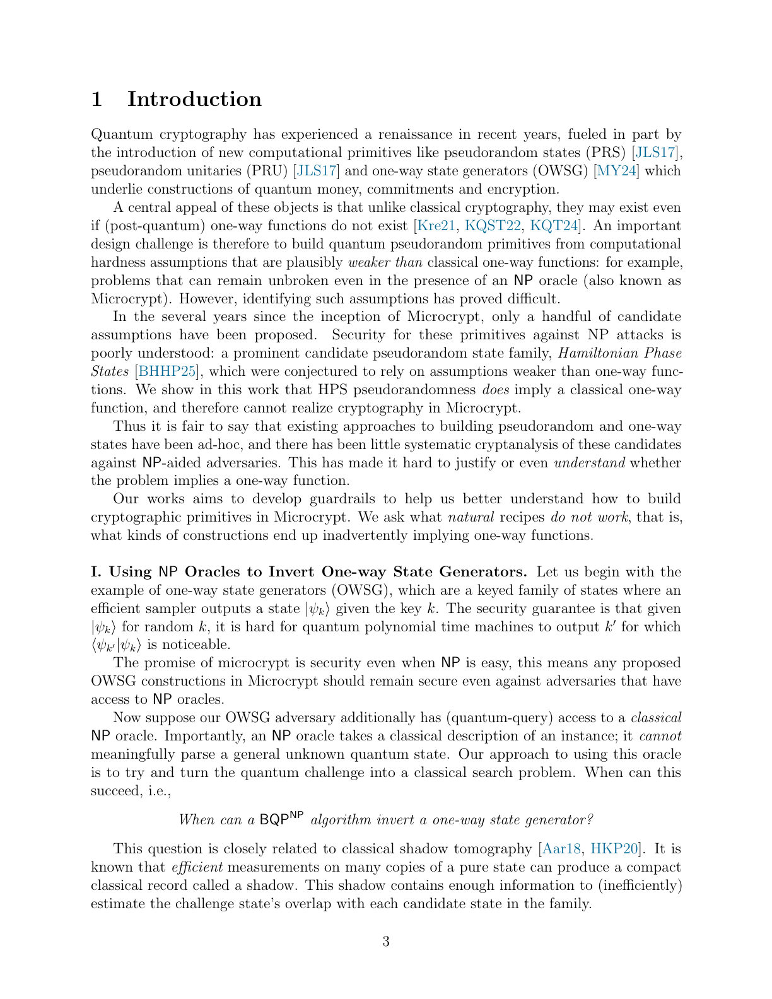
<figcaption class="paper-figure-caption"><b>Fig 2.</b> Low-resolution page preview, page 3</figcaption>
</figure>
<figure class="paper-figure-card">
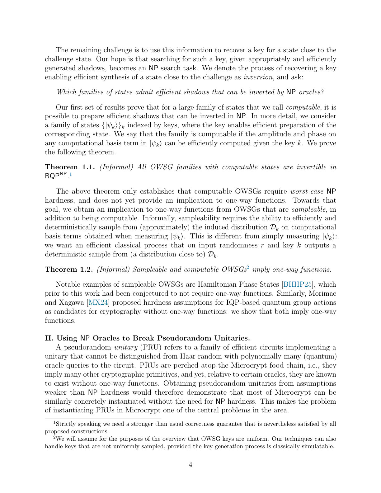
<figcaption class="paper-figure-caption"><b>Fig 3.</b> Low-resolution page preview, page 4</figcaption>
</figure>
<figure class="paper-figure-card">
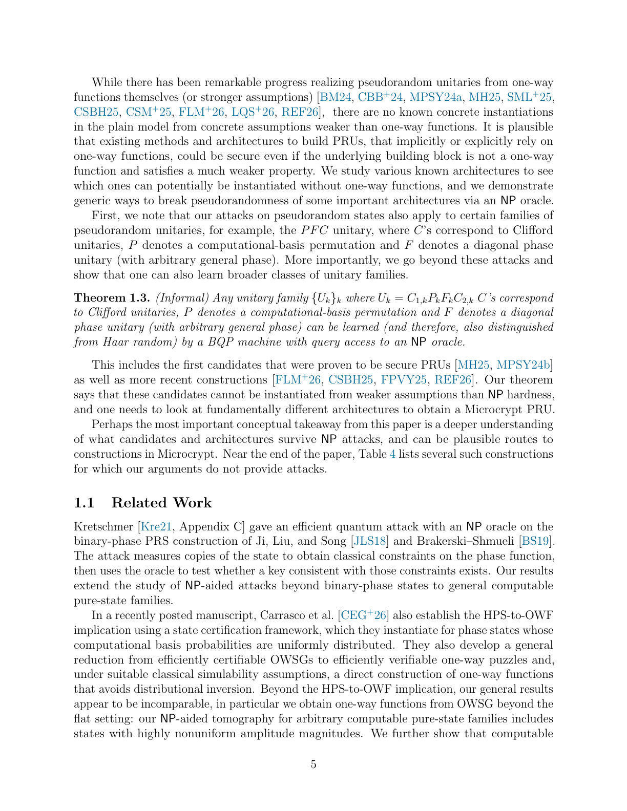
<figcaption class="paper-figure-caption"><b>Fig 4.</b> Low-resolution page preview, page 5</figcaption>
</figure>
<figure class="paper-figure-card">
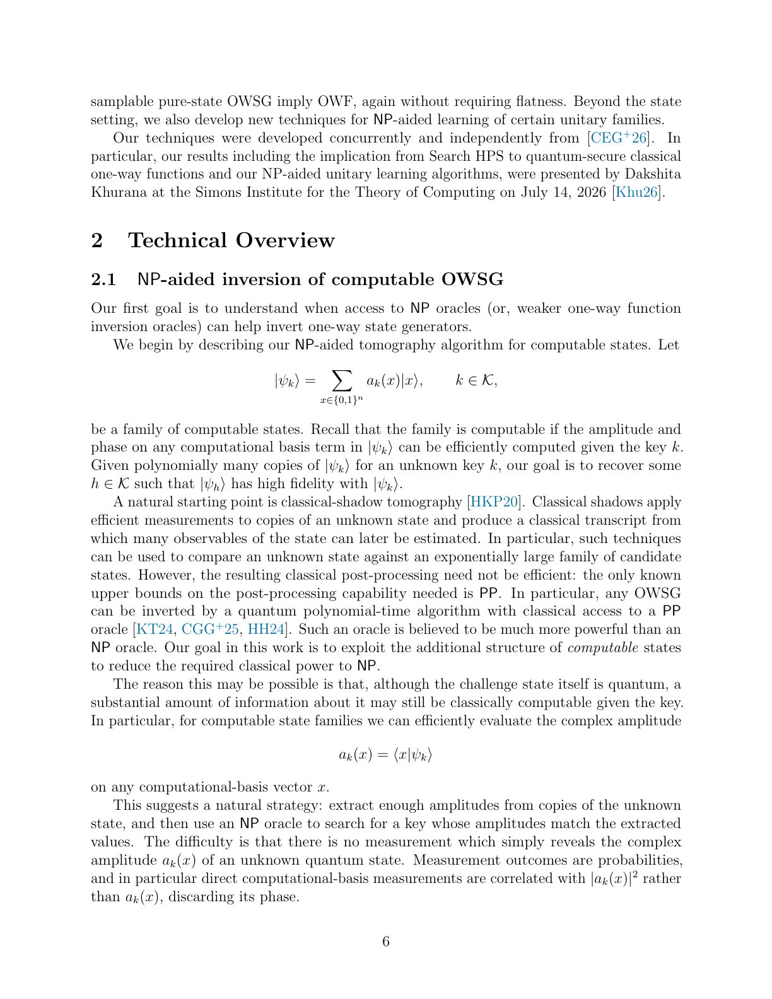
<figcaption class="paper-figure-caption"><b>Fig 5.</b> Low-resolution page preview, page 6</figcaption>
</figure>
</div>

<p><strong>Summary.</strong> This paper analyzes the fundamental assumptions required for quantum cryptography, specifically targeting primitives like PRS and PRU. By introducing NP-aided shadow tomography, the authors demonstrate that many proposed constructions inadvertently imply the existence of classical one-way functions or require computational hardness equivalent to NP. This work constrains the assumptions available for building quantum-secure protocols.</p>
<p><strong>Why it may be interesting.</strong> While the focus is on complexity theory, the techniques developed for state learning and distinguishing quantum states from random ones are fundamental tools in quantum information theory, relevant for understanding the limits of quantum computation.</p>
<details>
<summary>Detailed structure</summary>
<p><strong>Main problem.</strong> The authors investigate the feasibility of constructing quantum cryptographic primitives, such as Pseudorandom States (PRS) and Pseudorandom Unitaries (PRU), without relying on the assumption of classical one-way functions.</p>
<p><strong>Main result.</strong> They prove that many existing constructions for PRS/PRU, even those designed to avoid one-way functions, are shown to either imply the existence of one-way functions or imply NP hardness.</p>
<p><strong>Method.</strong> The work introduces and utilizes NP-aided shadow tomography and develops new algorithms for learning quantum unitaries, employing contradiction arguments based on posterior sampling techniques.</p>
<p><strong>Model / system.</strong> The analysis focuses on computable pure-state families of quantum states and unitary transformations, analyzed through their measurement distributions and learnability by quantum computers with access to an NP oracle.</p>
<p><strong>Key observables.</strong> Amplitudes and phases of quantum states, measurement distributions (classical transcripts), and the fidelity between estimated and true key states.</p>
<p><strong>Important parameters / regimes.</strong> Error bounds ($\epsilon, \delta$), computational complexity classes (NP, BQP), and the structure of the underlying cryptographic primitives (OWSG, PRS, PRU).</p>
<p><strong>Assumptions / limitations.</strong> The analysis relies on the existence of computable and samplable pure-state One-Way State Generators (OWSGs) and the ability to perform posterior sampling estimates.</p>
<p><strong>Paper structure.</strong> The paper progresses by first establishing the tools (NP-aided tomography, learning algorithms) and then applying these tools to show that specific classes of cryptographic candidates fail because they imply classical one-way functions or NP hardness.</p>
</details>
<details>
<summary>Abstract</summary>
<p>A key challenge in quantum cryptography is to build quantum one-wayness and pseudorandomness without the use of (quantum computable) one-way functions. So far, this has turned out to be a difficult task, with only a few proposed candidates that are not directly built from one-way functions. Even within these few proposed candidates, we have lacked the techniques to analyze when proposed constructions may inadvertently yield one-way functions.   In this work, we introduce efficient NP-aided shadow tomography of quantum states. We prove that collections of {\em computable} pure states can be learned via efficient NP-aided shadow tomography, where we say that a state is computable if the amplitude and phase on any computational basis term can be classically efficiently computed given the description of an efficient preparation circuit for the state. We also give new algorithms for NP-aided learning of unitaries given polynomially many queries to the unitary.   By building on this, we show that many existing architectures for PRS and PRU, including some that were explicitly introduced for the purposes of avoiding one-way functions (e.g., Hamiltonian Phase States, Bostanci et. al., TQC 2025), actually do imply the existence of one-way functions or imply \(\NP\) hardness. We hope that these no-go results will inform future investigations into building PRS and PRUs from assumptions that are plausibly outside the complexity class NP.</p>
</details>
<p><sub><a href="#top">↑ back to top</a></sub></p>

<p><a id="paper-2609.29471"></a></p>
<h3 id="optimal-entanglement-criteria-from-trace-invariants"><a href="http://arxiv.org/abs/2609.29471v1">Optimal entanglement criteria from trace invariants</a></h3>
<p><strong>Authors:</strong> Bivas Mallick, Aabhas Gulati, Ion Nechita<br>
<strong>Type:</strong> theory · <strong>Category:</strong> quantum information and computing · <strong>PDF:</strong> <a href="https://arxiv.org/pdf/2609.29471v1">https://arxiv.org/pdf/2609.29471v1</a><br>
<strong>Analysis basis:</strong> full PDF text, analyzed in chunks
<strong>Topic relevance:</strong> <code>quantum measurements</code> <strong>2/5</strong></p>
<div class="figure-strip-hint">↔ Scroll figures horizontally</div>
<div class="paper-figures-scroll">
<figure class="paper-figure-card">
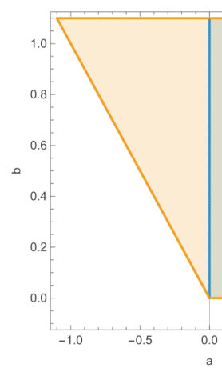
<figcaption class="paper-figure-caption"><b>Fig 1.</b> Figure 1. Comparison of the Hermitian cone Ineqall 2 with the PSD cone Ineqpsd 2 in degree two. The two cones are parametrizes by a[2] + b[12].</figcaption>
</figure>
<figure class="paper-figure-card">
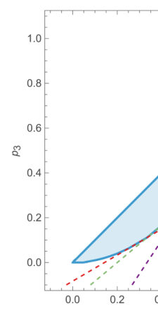
<figcaption class="paper-figure-caption"><b>Fig 2.</b> Figure 2. The slice p1 = 1 through Mompsd 3 . The top boundary corresponds to the extremal ray p1p2 ≥p3 of Ineqpsd 3 . The bottom boundary is a union of infinitely many segments correspodning to the extremal inequalities p3 1 −(2k + 1)p1p2 + k(k + 1)p3 ≥0, for k ≥1; the first three such support inequalities are shown using colored dashed lines. The inflection points correspond to the uniform spectra from Eq. (4).</figcaption>
</figure>
<figure class="paper-figure-card">
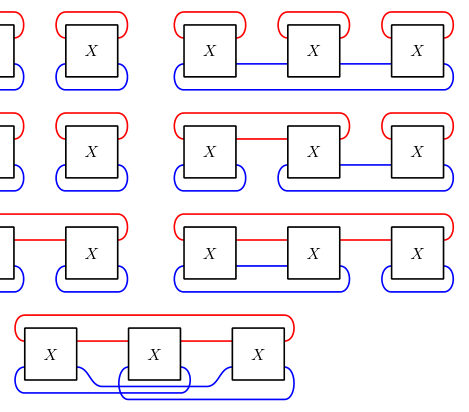
<figcaption class="paper-figure-caption"><b>Fig 3.</b> Figure 4. Representatives of the eleven G3-orbits of pairs of permutations in S2 3, ordered according to C111;e, C111;(12), C111;(123), C21;e, C21;(12), C21;(23), C21;(123), C3;e, C3;(12), C3;(123), C3;(132). The first argument (integer partition) corresponds to Alice’s permutation, while the second one to Bob’s permutation.</figcaption>
</figure>
<figure class="paper-figure-card">
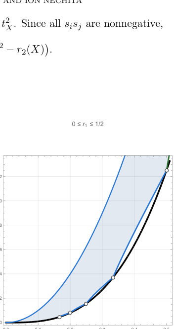
<figcaption class="paper-figure-caption"><b>Fig 4.</b> Figure 5. The figure shows the exact solution of α(r1, r2) ≤1 (in light blue). The boundary of this region (in blue) is given by the collection of arcs (ref. Theorem 5.5), and the upper curve r2 1 = r2 that encodes feasibility of α(r). The first arc (in green) is given by Corollary 5.6. The black curve is r3 1 = r2, which is obtained from the continuous approximation αc(r) = 1 in Theorem 5.9. The right figure is the zoomed rectangle in the left ones.</figcaption>
</figure>
<figure class="paper-figure-card">
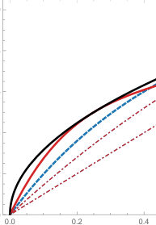
<figcaption class="paper-figure-caption"><b>Fig 5.</b> Figure 6. The figure shows the polynomial minorants of y = √x. The binomial minorant f4 is presented in dashed blue, as well as the the minorant g4,1 obtained from Eq. (22) in red. The first two minorants f1, f2, are represented by y = x and y = 3</figcaption>
</figure>
</div>

<p><strong>Summary.</strong> This paper develops a rigorous mathematical framework to find the best entanglement criterion based only on measurable local unitary trace invariants. By employing convex duality and solving truncated moment problems, the authors derive explicit, dimension-free separability inequalities. This advances the understanding of entanglement detection by connecting it to moment theory.</p>
<p><strong>Why it may be interesting.</strong> This work provides rigorous mathematical tools (convex duality, moment problems) to establish necessary and sufficient conditions for separability based on measurable quantities (trace invariants), which is fundamental to quantum information theory.</p>
<details>
<summary>Detailed structure</summary>
<p><strong>Main problem.</strong> The paper addresses determining the optimal entanglement criterion that can be constructed using only a finite set of local unitary trace invariants, as randomized measurements only provide access to these invariants, not the full quantum state.</p>
<p><strong>Main result.</strong> The authors provide a framework using convex duality to solve the associated truncated moment problem, yielding explicit, dimension-free families of separability inequalities (binomial and L1-weighted).</p>
<p><strong>Method.</strong> The core methodology involves applying convex duality to relate the cone of separable states to the polar dual of a moment cone, solving the resulting moment problem via semidefinite programming relaxations.</p>
<p><strong>Model / system.</strong> The focus is on bipartite quantum states $
ho$ on $\mathcal{C}_d \otimes \mathcal{C}_d$, specifically determining when they are separable ($
ho = \sum p_i \sigma_{A,i} \otimes \sigma_{B,i}$).</p>
<p><strong>Key observables.</strong> Local unitary trace invariants, moment vectors derived from partial transposition and realignment matrices, and the optimal $m$-moment relaxation $\alpha(r)$.</p>
<p><strong>Important parameters / regimes.</strong> The number of moments considered, $m$, and the local dimensions $d_A, d_B$.</p>
<p><strong>Assumptions / limitations.</strong> The analysis relies on the assumption that the best criterion can be found by optimizing over a finite number of moment constraints derived from trace invariants.</p>
<p><strong>Figures summary.</strong> Not specified.</p>
<p><strong>Paper structure.</strong> The paper systematically introduces the cone of local unitary trace inequalities for separable states, relates this to moment cones via duality, analyzes specific criteria like PPT and realignment using moment matching, and finally solves the resulting truncated moment problem to derive optimal inequalities.</p>
</details>
<details>
<summary>Abstract</summary>
<p>Randomized measurement protocols give experimental access to low-degree polynomial invariants of a quantum state rather than to the state itself, which raises the question of what the best entanglement criterion is that can be built from finitely many such invariants. In this work we answer this question through convex duality.   For each degree we introduce the cone of local unitary trace inequalities that are valid for separable bipartite states in all local dimensions, together with its one-matrix counterparts for Hermitian and positive semidefinite matrices. Each cone is the polar dual of a moment cone; we also determine the minimal combinatorial parametrization of the separable cone. The framework organizes the known moment criteria: the PPT criterion using the first three moments of the partial transposition is the image under an embedding of a Hankel determinant from the positive semidefinite cone to the bipartite cone, which we show to be an extremal ray, and we determine the first nontrivial separable cone completely, finding exactly four extremal rays.   The framework allows us to analyze the realignment criterion and its centered (or enhanced) variant. We prove that the even singular value moments of the (centered) realignment matrix are trace invariants, associated with explicit fixed-point-free involutions. Extracting the optimal trace-norm bound from $m$ such moments thus becomes a dimension-free truncated moment problem, which we solve in closed form for $m = 2$ and relax to a semidefinite program of size $O(m)$ for arbitrary $m$. The dual solutions are polynomial minorants of $\sqrt{x}$ on $[0,1]$, and two explicit families, binomial and $L^1$-weighted, yield hierarchies of separability inequalities. Finally, we compare the criteria against one another and on PPT entangled states.</p>
</details>
<p><sub><a href="#top">↑ back to top</a></sub></p>

<p><a id="paper-2609.30265"></a></p>
<h3 id="upper-critical-dimension-for-dirty-weyl-semimetal-to-metal-quantum-phase-transitions"><a href="http://arxiv.org/abs/2609.30265v1">Upper critical dimension for dirty Weyl semimetal-to-metal quantum phase transitions</a></h3>
<p><strong>Authors:</strong> Yongtai Li, Bitan Roy<br>
<strong>Type:</strong> theory · <strong>Category:</strong> disordered systems and neural networks · <strong>PDF:</strong> <a href="https://arxiv.org/pdf/2609.30265v1">https://arxiv.org/pdf/2609.30265v1</a><br>
<strong>Analysis basis:</strong> full PDF text, analyzed in chunks
<strong>Topic relevance:</strong> <code>Keldysh / 2PI / non-Gaussian methods</code> <strong>2/5</strong></p>
<div class="figure-strip-hint">↔ Scroll figures horizontally</div>
<div class="paper-figures-scroll">
<figure class="paper-figure-card">
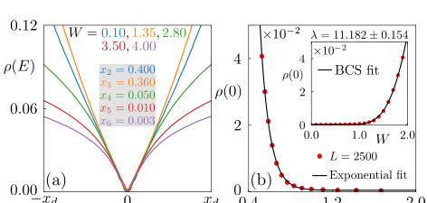
<figcaption class="paper-figure-caption"><b>Fig 1.</b> FIG. 1. (a) ADOS ρ(E) at energy E with sgn(E) |E|d−1 in d-dimensional WSMs at weak disorder W (see legend). (b) Scaling of ρ(0) with 1/W for a WSM in d = 2. Inset: Scal- ing of ρ(0) with W. Red dots are numerically obtained data points and black curves are the fits with ρ(0) ∼exp(−λ/W), where λ is a fitting parameter (see legends).</figcaption>
</figure>
<figure class="paper-figure-card">
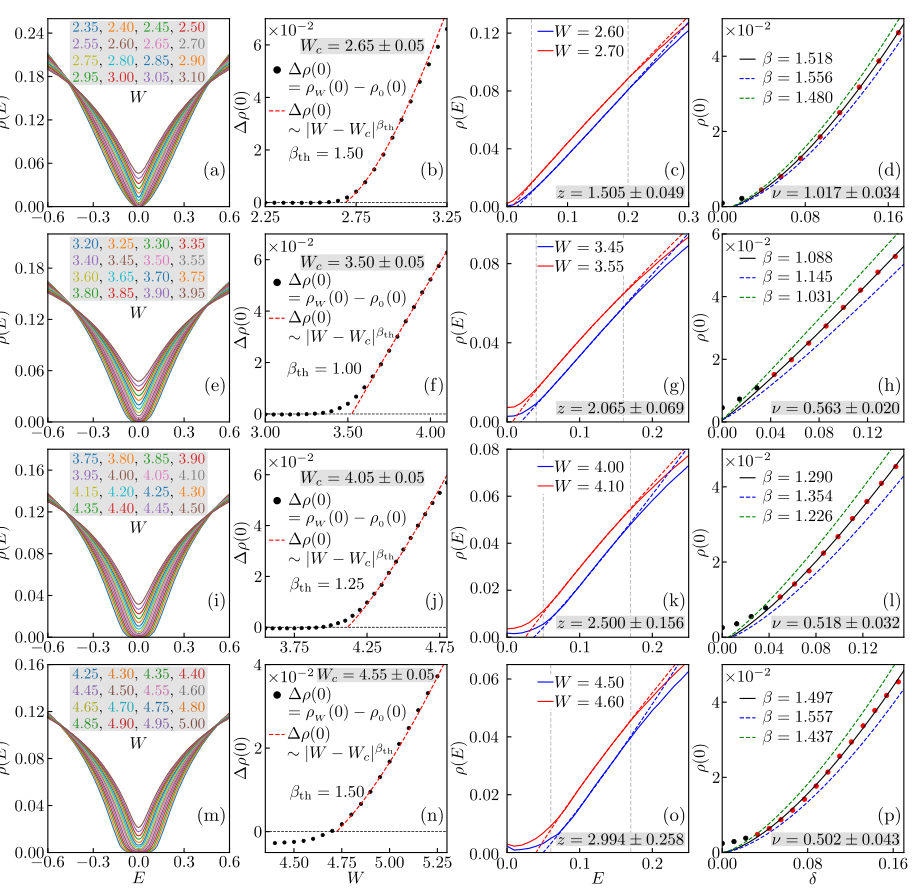
<figcaption class="paper-figure-caption"><b>Fig 2.</b> FIG. 2. (a) ADOS ρ(E) at energy E as a function of disorder W. (b) ∆ρ(0) (see text) as a function of W (black dots), marking the critical disorder strength Wc, with the red dashed line showing its expected behavior from analytical calculations. (c) DSE z near W = Wc, obtained from the power-law fitting of ρ(E) within the range of E marked by vertical dashed lines. (d) CLE ν, obtained from the scaling of ρ(0) in the metallic phase from red (by excluding black) colored data points. All the calculations are performed in the largest system with L = 200 in d = 3. Panels (e)-(h) are analogous to panels (a)-(d), respectively, but in the largest system with L = 52 in d = 4. Panels (i)-(l) are...</figcaption>
</figure>
<figure class="paper-figure-card">
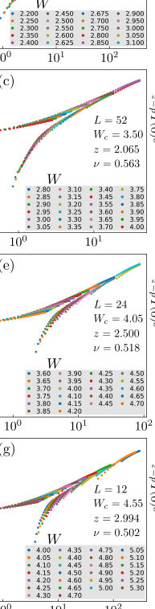
<figcaption class="paper-figure-caption"><b>Fig 3.</b> FIG. 3. (a) Data collapse in the largest system in d = 3, obtained by comparing ρ(E)|δ|−ν(d−z) with |E|δ−νz with nu- merically obtained mean values of Wc, z, and ν (see legend). (b) Data collapse in the metallic phase, obtained by compar- ing ρ(0)Ld−z with L1/νδ in d = 3 for various system sizes L (see legend). Panel (c) [(d)] is analogous to (a) [(b)], but in d = 4. Panels (e) [(f)] is analogous to (a) [(b)], but in d = 5. Panel (g) [(h)] is analogous to (a) [(b)], but in d = 6.</figcaption>
</figure>
</div>

<p><strong>Summary.</strong> This paper analyzes the quantum phase transition from a semimetal to a metal in disordered Weyl semimetals. By combining numerical simulations with advanced renormalization group techniques, the authors establish that the transition is governed by critical dimensions at $d=2$ and $d=4$. The findings provide universal scaling laws for the critical exponents, offering a deep theoretical understanding of disorder effects in topological matter.</p>
<p><strong>Why it may be interesting.</strong> The work provides a detailed theoretical framework for understanding quantum criticality in topological materials under disorder, which has implications for understanding transport properties in disordered quantum systems relevant to AMO physics and condensed matter theory.</p>
<details>
<summary>Detailed structure</summary>
<p><strong>Main problem.</strong> The paper investigates the disorder-driven semimetal-to-metal quantum phase transition (QPT) occurring in Weyl semimetals (WSMs). It aims to determine the critical dimensions governing this unconventional transition.</p>
<p><strong>Main result.</strong> The analysis strongly suggests that the lower critical dimension is $d_\ell=2$ and the upper critical dimension is $d_u=4$. Furthermore, the dynamic scaling exponent is found to be $z \approx d/2$ for $d \geq 3$.</p>
<p><strong>Method.</strong> The study employs a combination of numerical computations (Kernel Polynomial Method for ADOS) and advanced theoretical techniques, including the self-consistent Born approximation (SCBA) and field-theoretic renormalization group (RG) calculations ($\epsilon_d$ and $\epsilon_m$ expansions).</p>
<p><strong>Model / system.</strong> The system under study is a Weyl semimetal described by a tight-binding Hamiltonian on a $d$-dimensional hypercubic lattice, subjected to random pointlike charge impurities (disorder strength $W$).</p>
<p><strong>Key observables.</strong> Average Density of States (ADOS) $
ho(E)$, the order parameter $
ho(0)$, the correlation length exponent ($
u$), and the dynamic scaling exponent ($z$).</p>
<p><strong>Important parameters / regimes.</strong> The spatial dimension $d$, the disorder strength $W$, and the critical disorder strength $W_c$.</p>
<p><strong>Assumptions / limitations.</strong> The analysis relies on the validity of the SCBA and the results derived from the $\epsilon_m$ RG expansion, which is considered more reliable than the $\epsilon_d$ expansion.</p>
<p><strong>Figures summary.</strong> Figures illustrate the calculated ADOS $
ho(E)$ across various dimensions ($d=2$ to $6$) and show the scaling behavior of $
ho(0)$ and the determination of critical exponents ($
u, z$) as a function of dimension.</p>
<p><strong>Paper structure.</strong> The paper systematically analyzes the QPT using numerical ADOS calculations, followed by rigorous theoretical analysis using RG techniques to pinpoint the critical dimensions ($d_\ell=2, d_u=4$) and derive universal scaling exponents.</p>
</details>
<details>
<summary>Abstract</summary>
<p>Weyl or Dirac fermions with the iconic linear energy-momentum relation and average density of states (ADOS) $ρ(E) \sim |E|^{d-1}$ at energy $E$ in $d$ spatial dimensions, constitute a unique setup to study the disorder-driven semimetal-to-metal quantum phase transition (QPT) between ballistic (realized for weak disorder) and diffusive (stabilized at stronger disorder) quasiparticles. Such a QPT takes place only for $d>2$ and falls beyond the realm of the Anderson metal-to-insulator transition. From numerically computed ADOS (using the kernel polynomial method) in dirty Weyl systems in $d=2$ to $6$, here we show that $d=2$ and $d=4$ are the lower ($d_\ell$) and upper ($d_u$) critical dimensions for such an unconventional QPT, respectively, as suggested from the solution of quasiparticle lifetime within the self-consistent Born approximation. Consequently, for $d \geq 4$ the associated correlation length exponent is found to be $ν\approx 0.5$ (within numerical accuracy). However, the dynamic scaling exponent at the quantum critical point is pinned close to $z \approx d/2$ (numerically) for any $d \geq 3$, which is shown to be an exact result from a field-theoretic renormalization group calculation. Therefore, Weyl semimetal-to-metal QPTs can be studied field theoretically around both $d_\ell$ and $d_u$.</p>
</details>
<p><sub><a href="#top">↑ back to top</a></sub></p>

<p><a id="paper-2609.30154"></a></p>
<h3 id="consistent-determination-of-stability-regimes-in-natural-ecological-communities-from-abundance-time-series"><a href="http://arxiv.org/abs/2609.30154v1">Consistent determination of stability regimes in natural ecological communities from abundance time series</a></h3>
<p><strong>Authors:</strong> Alberto Megías, Vicente J. Ontiveros, David Alonso, José A. Capitán<br>
<strong>Type:</strong> theory · <strong>Category:</strong> statistical mechanics · <strong>PDF:</strong> <a href="https://arxiv.org/pdf/2609.30154v1">https://arxiv.org/pdf/2609.30154v1</a><br>
<strong>Analysis basis:</strong> full PDF text, analyzed in chunks
<strong>Topic relevance:</strong> <code>Keldysh / 2PI / non-Gaussian methods</code> <strong>1/5</strong> · <code>driven-dissipative phase transition</code> <strong>1/5</strong> · <code>methods for driven-dissipative</code> <strong>1/5</strong> · <code>non-equilibrium universality</code> <strong>1/5</strong></p>
<div class="figure-strip-hint">↔ Scroll figures horizontally</div>
<div class="paper-figures-scroll">
<figure class="paper-figure-card">
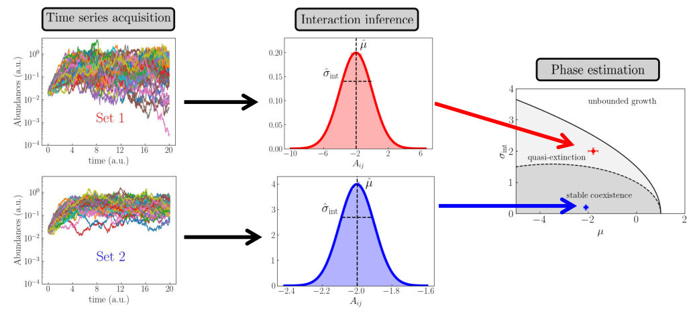
<figcaption class="paper-figure-caption"><b>Fig 1.</b> FIG. 1: Statistical framework designed to infer stability regimes from abundance time series. From a time series reporting species abundances in a natural community (left panels, two scenarios), the methodology allows to infer the first moments of the distribution of interactions (middle panels), as well as the intensity of the environmental noise. The inferred estimates inform about the community stability phase, this being either stable coexistence or quasi-extinction (right panel). Thus, species extinction risks in the community can be assessed quantitatively.</figcaption>
</figure>
<figure class="paper-figure-card">
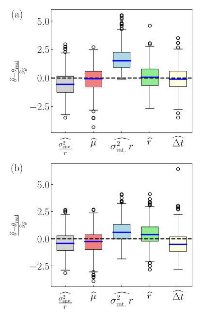
<figcaption class="paper-figure-caption"><b>Fig 2.</b> FIG. 2: Validation of parameter estimates with GLV simulated dynamics. The distributions of the z-score for each estimate are shown. Panel (a) shows estimation results in the absence of interactions: σ2 env = 0.1, µ = σint = 0. Panel (b): σ2 env = 0.05, µ = −2, σ2 int = 0.25. Remaining parameters are: r = 1, ∆t = 0.02, S = 50 interacting species. Both variances, σ2 env and σ2 int, are re-scaled with r, see Eq. 6 and SI Appendix, section S4.2.</figcaption>
</figure>
<figure class="paper-figure-card">
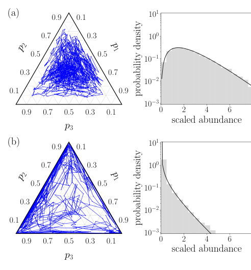
<figcaption class="paper-figure-caption"><b>Fig 3.</b> FIG. 3: Ecological phases. (a) Stable coexistence phase (α &gt; 1), with relative abundances fluctuating in the interior of the simplex (here we show three relative abundances of a simulated model trajectory); the SAD in this regime has a mode at strictly positive abundance (right). (b) Quasi- extinction phase (α &lt; 1), for which relative abundances are close to zero with high probability; the corresponding SAD peaks at zero abundance instead (right). Abundances are divided by the scale parameter θ of the Gamma distribution.</figcaption>
</figure>
<figure class="paper-figure-card">
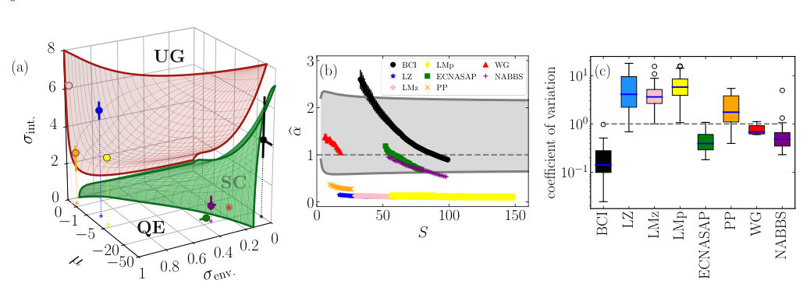
<figcaption class="paper-figure-caption"><b>Fig 4.</b> FIG. 4: Phase transitions. (a) Phase diagram in units of r = 1 (the µ axis is represented in logarithmic scale). Three phases arise: stable coexistence (SC, behind the green surface), quasi-extinction (QE, in between of both surfaces), and unbounded growth (UG, above the red surface). Phase transitions (surfaces) are sharp only in the limit S →∞. Errorbars correspond to the 25% and 75% percentiles of the distribution of parameters (µ, σint, σenv) for core sizes S compatible with data. The risk of extinction of natural communities is evaluated depending on the phase (SC or QE) they belong to. (b) Estimated Gamma’s shape parameter bα as function of the core sizes (S) consistent with data. The...</figcaption>
</figure>
<figure class="paper-figure-card">
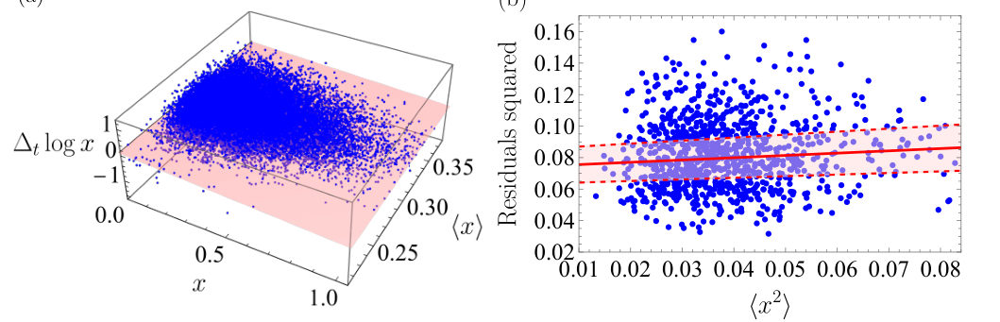
<figcaption class="paper-figure-caption"><b>Fig 5.</b> FIG. 1: (a) Sketch of the multivariate linear regression, where ∆t log x := log(x(t + ∆t)) −log(x(t)) and ⟨x⟩= M. The blue circles refer to the empirical points and the red plane refers to that obtained from the regression. (b) Second step of the fitting methodology, where Σ = ⟨x2⟩. The blue circles refer to the empirical residuals from the multivariate linear regression of the first panel. The red straight line refers to that obtained from the linear regression and the red ribbon is compatible with the estimated deviation from a bootstrapping method.</figcaption>
</figure>
</div>

<p><strong>Summary.</strong> This paper introduces a statistical method to assess the stability of complex ecological communities using only long-term species abundance time series. By applying concepts from dynamical mean-field theory to stochastic Lotka-Volterra dynamics, the authors classify communities into regimes of stable coexistence, quasi-extinction, or unbounded growth. This provides a powerful, non-invasive tool for quantifying species extinction risk in ecology.</p>
<p><strong>Why it may be interesting.</strong> The mathematical machinery used—analyzing steady-state distributions (Gamma law) and phase transitions based on noise and interaction parameters—is highly analogous to techniques used in non-equilibrium statistical mechanics for complex interacting systems.</p>
<details>
<summary>Detailed structure</summary>
<p><strong>Main problem.</strong> To develop a statistical framework that infers the stability regimes of large ecological communities directly from species abundance time series, bypassing the need to measure direct species interactions.</p>
<p><strong>Main result.</strong> The theory predicts three distinct stability regimes (stable coexistence, quasi-extinction, and unbounded growth), with the stability determined by the relationship between environmental stochasticity and interaction strengths.</p>
<p><strong>Method.</strong> The authors use Dynamical Mean-Field Theory (DMFT) applied to stochastic Generalized Lotka-Volterra dynamics, reducing the multi-species system to an effective single-species stochastic process analyzed via multivariate regression.</p>
<p><strong>Model / system.</strong> The system models community dynamics using stochastic GLV equations with random interactions and environmental noise. The analysis focuses on the steady-state probability distribution, which is predicted to follow a Gamma law.</p>
<p><strong>Key observables.</strong> Species abundance time series, steady-state species abundance distribution (SAD), and the coefficient of variation (CV) of abundance.</p>
<p><strong>Important parameters / regimes.</strong> The stability is governed by parameters related to environmental noise intensity ($\sigma^2_{env}$), interaction variance ($\sigma^2_{int}$), and the mean growth rate ($\mu$).</p>
<p><strong>Assumptions / limitations.</strong> The method assumes that the dynamics can be effectively described by the stochastic GLV model and that the system can be reduced via DMFT to an effective single-species process.</p>
<p><strong>Figures summary.</strong> Figures illustrate the statistical framework linking time series to stability phases, show parameter recovery using synthetic data, and present phase diagrams classifying different ecological datasets into SC, QE, or UG regimes.</p>
<p><strong>Paper structure.</strong> The paper progresses by first establishing the statistical framework using DMFT on stochastic GLV dynamics, deriving the Gamma-distributed steady-state solution, defining the criteria for the three stability regimes based on system parameters, and finally applying this method to analyze empirical ecological datasets.</p>
</details>
<details>
<summary>Abstract</summary>
<p>The stability of an ecological community is conventionally defined through species interactions, which quantify how species affect one another. Interaction strengths are notoriously difficult to measure in species-rich assemblages. Long-term monitoring of species-rich communities, however, provides species abundance time series, increasingly available across habitats and taxa but not yet connected to the stability properties of the communities they describe. Here we develop a statistical framework that infers stability regimes in large ecological communities directly from abundance time series. We study stochastic Generalized Lotka--Volterra dynamics with random interactions and environmental fluctuations using dynamical mean-field theory, reducing the multispecies system to an effective stochastic process for a representative species. The theory predicts three stability regimes (stable coexistence, intermittent dynamics close to extinction, and unbounded growth) separated by analytical boundaries, and shows that environmental stochasticity systematically destabilizes coexistence by promoting intermittent low-abundance dynamics. The resulting steady-state species abundance distribution is a Gamma law that ties the dynamical phases to the variability-based stability metrics used in empirical studies. Recasting the effective dynamics as a multivariate regression model, we infer interaction statistics, environmental variability and the characteristic timescale of the dynamics from community data, without reconstructing the interaction network. Applied to natural communities spanning a broad range of habitats and taxa, the method resolves contrasting stability regimes and yields quantitative estimates of species extinction risk.</p>
</details>
<p><sub><a href="#top">↑ back to top</a></sub></p>

<p><a id="paper-2609.28647"></a></p>
<h3 id="compact-representation-of-strongly-correlated-greens-functions-the-morec-way-to-explore-phase-space"><a href="http://arxiv.org/abs/2609.28647v1">Compact representation of strongly correlated Green's functions: the MOR+EC way to explore phase space</a></h3>
<p><strong>Authors:</strong> Norman Hogan, A. F. Kemper, Carlos Mejuto-Zaera<br>
<strong>Type:</strong> theory · <strong>Category:</strong> strongly correlated electrons · <strong>PDF:</strong> <a href="https://arxiv.org/pdf/2609.28647v1">https://arxiv.org/pdf/2609.28647v1</a><br>
<strong>Analysis basis:</strong> full PDF text, analyzed in chunks
<strong>Topic relevance:</strong> <code>Keldysh / 2PI / non-Gaussian methods</code> <strong>1/5</strong> · <code>analog quantum simulation</code> <strong>1/5</strong> · <code>methods for driven-dissipative</code> <strong>1/5</strong></p>
<div class="figure-strip-hint">↔ Scroll figures horizontally</div>
<div class="paper-figures-scroll">
<figure class="paper-figure-card">
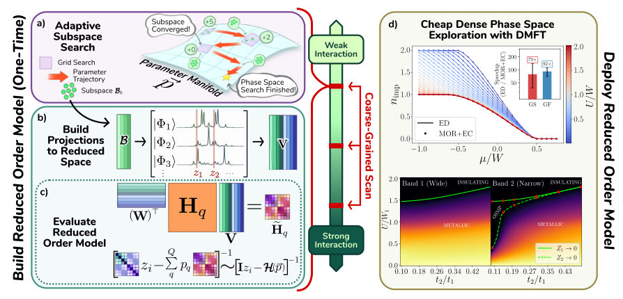
<figcaption class="paper-figure-caption"><b>Fig 1.</b> FIG. 1. Summary of this work. We combine a reduced basis method for ground state determination [eigenvector continuation (EC)] and Green’s function (GF) evaluation [model order reduction (MOR)] to build (a-c) and deploy (d) reduced-order models for dense phase space exploration, and apply these methods to dynamical mean field theory (DMFT). (a) Using EC, we build a reduced basis B to represent the ground state across the parameter manifold using global and local grid searches during DMFT calculations. (b) Using the subspace B as interpolation directions, we choose some interpolation frequencies zi that build a compact representation of the impurity GF using projections (V, W) built from a...</figcaption>
</figure>
<figure class="paper-figure-card">
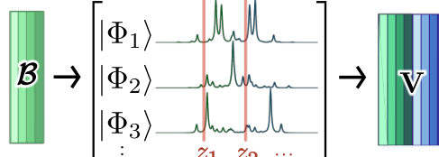
<figcaption class="paper-figure-caption"><b>Fig 2.</b> FIG. 2. Illustration of MOR+EC projections. Once a basis B for EC is determined, a set of interpolation points zr = {z1, . . . , zr} are chosen to evaluate the columns of V and W (see Eq. 6). Each state |Φi⟩∈B in principle has a unique spectrum.</figcaption>
</figure>
<figure class="paper-figure-card">
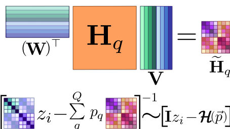
<figcaption class="paper-figure-caption"><b>Fig 3.</b> FIG. 3. Projected quantities for the reduced-order model using MOR+EC. Given a full order model H(⃗p) = PQ q pqHq and projections built with MOR+EC, the resol- vent of the full order model is approximated using the pro- jected quantities eI = (W)⊤V (multiplying zi) and eHq = (W)⊤HqV.</figcaption>
</figure>
<figure class="paper-figure-card">
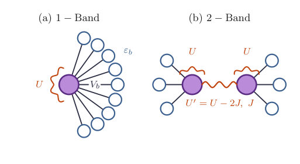
<figcaption class="paper-figure-caption"><b>Fig 4.</b> FIG. 4. Impurity models used in this work. (a) The single-impurity model involves a single interacting or- bital (filled circle) with interactions (squiggly lines) described by Eq. 9 coupled to 9 noninteracting bath orbitals (empty circles). (b) The two-band model involves two interacting orbitals with intra- (U) and inter- (U ′) orbital interactions described by Eq. 10. Each orbital is coupled to 3 noninter- acting orbitals.</figcaption>
</figure>
<figure class="paper-figure-card">
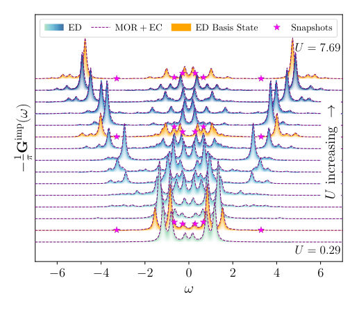
<figcaption class="paper-figure-caption"><b>Fig 5.</b> FIG. 5. Simple example of MOR+EC in action. Us- ing the SIAM with 5 bath sites, we benchmark MOR+EC’s performance when only one parameter is varied (fixed bath, varying U) and show that MOR+EC completely captures the entire spectrum of states outside the EC basis B and at ω values outside of our interpolation set zr. The magenta stars show what snapshots are in the MOR+EC projections (Eq. 6) and all other data is found with the ROM.</figcaption>
</figure>
</div>

<p><strong>Summary.</strong> This paper introduces MOR+EC, a novel framework that combines Model Order Reduction and Eigenvector Continuation to create compact, reusable models for calculating Green's functions. By drastically reducing the computational cost of repeated evaluations, the method allows for high-resolution mapping of complex phase diagrams in strongly correlated electron systems studied via DMFT. This represents a significant computational advance for theoretical condensed matter physics.</p>
<p><strong>Why it may be interesting.</strong> The efficiency gains achieved by reducing the dimensionality of the parameter and frequency space are highly relevant for any simulation involving repeated calculations of spectral functions or response properties in open quantum systems.</p>
<details>
<summary>Detailed structure</summary>
<p><strong>Main problem.</strong> Repeated evaluation of the single-particle Green's function across parameter space is a major computational bottleneck in many-body methods.</p>
<p><strong>Main result.</strong> The MOR+EC framework achieves high accuracy (relative error $\sim 10^{-4}$) with massive speedups ($16-91	imes$), enabling fine-grained phase diagram mapping.</p>
<p><strong>Method.</strong> The authors combine Model Order Reduction (MOR) for frequency extrapolation and Eigenvector Continuation (EC) for parameter space exploration to build a compact, reusable reduced-order model.</p>
<p><strong>Model / system.</strong> The framework is applied to strongly correlated materials studied via Dynamical Mean-Field Theory (DMFT) using single- and two-band impurity models.</p>
<p><strong>Key observables.</strong> Single-particle Green's function (GF), impurity self-energy ($\Sigma_{	ext{imp}}$), and real/imaginary-frequency spectra.</p>
<p><strong>Important parameters / regimes.</strong> Doping, temperature, and the frequency axis ($z$ or $i\omega_n$).</p>
<p><strong>Assumptions / limitations.</strong> The reduced-order model construction relies on the assumption that the system's physics can be accurately captured by a low-dimensional subspace spanned by sampled snapshots.</p>
<p><strong>Figures summary.</strong> Figures illustrate the combination of EC (for ground state basis B) and MOR (for GF representation) to build ROMs for dense phase space exploration, applied to DMFT.</p>
<p><strong>Paper structure.</strong> The paper progresses by defining the computational bottleneck, introducing the MOR+EC combination, detailing the adaptive basis construction (global/local enrichment), and finally demonstrating its successful application to the DMFT self-consistency loop.</p>
</details>
<details>
<summary>Abstract</summary>
<p>Repeated evaluation of the single-particle Green's function (GF) across parameter space is a recurring bottleneck in many-body methods, limiting the resolution at which phase boundaries may be probed and the frequency resolution of computed spectra. We introduce MOR+EC, a framework that constructs reusable reduced-order models for computing single-particle Green's functions by combining eigenvector continuation (EC) for parameter space exploration and model order reduction (MOR) for extrapolation in frequency space. Contrary to conventional parameterized MOR, we construct these reduced-order models with a parameter-independent resolvent, further reducing the number of required full-space evaluations. Benchmarking against exact diagonalization as the impurity solver for our example case of DMFT calculations for single- and two-band models, MOR+EC reproduces the DMFT-converged impurity GF to an average relative error of $\sim10^{-4}$, with a median wall-time speedup of $16-91\times$. This accuracy and efficiency together resolve a fine-grained scan of the impurity occupation as doping is tuned and produce a high-resolution phase diagram of an orbital-selective Mott transition. The reduced-order model also reproduces real- and imaginary-frequency spectra at no additional cost in full-space evaluations. This framework applies broadly to GF-based methods requiring repeated parametric evaluation and high resolution of the frequency axis.</p>
</details>
<p><sub><a href="#top">↑ back to top</a></sub></p>

<p><a id="paper-2609.28912"></a></p>
<h3 id="dense-pentacene-cocrystal-demonstrates-room-temperature-coherent-control"><a href="http://arxiv.org/abs/2609.28912v1">Dense pentacene cocrystal demonstrates room-temperature coherent control</a></h3>
<p><strong>Authors:</strong> Noella D'Souza, Guangzhao Chen, Madhur Parashar, Wern Ng, Brandon Wallace, Tatiana Lindahl, Tanner S. Volek, Lam Lam, Joseph Garrett, Emanuel Druga, Sean T. Roberts, Jeffrey Reimer, Harpreet Singh, Liang Z. Tan, Riccardo Montis, Ashok Ajoy<br>
<strong>Type:</strong> both · <strong>Category:</strong> other · <strong>PDF:</strong> <a href="https://arxiv.org/pdf/2609.28912v1">https://arxiv.org/pdf/2609.28912v1</a><br>
<strong>Analysis basis:</strong> full PDF text, analyzed in chunks
<strong>Topic relevance:</strong> <code>QC/QI experiment</code> <strong>1/5</strong> · <code>analog quantum simulation</code> <strong>1/5</strong> · <code>quantum measurements</code> <strong>1/5</strong></p>
<div class="figure-strip-hint">↔ Scroll figures horizontally</div>
<div class="paper-figures-scroll">
<figure class="paper-figure-card">
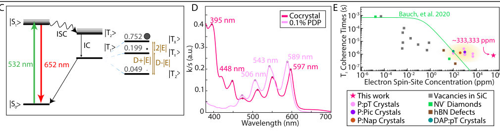
<figcaption class="paper-figure-caption"><b>Fig 1.</b> Fig. 1. Dense DHP/Pc cocrystal and electronic structure. (A) Morphology and fluorescence. SEM of DHP/Pc needle (width indicated); (i) optical image of second needle with green laser illumination highlights red fluorescence. (B) Crystal structure. (i) 2:1 DHP/Pc crystal structure from single-crystal X-ray diffraction. Dashed lines mark nearest pentacene separations along c (4.10 ˚A, between nearest two carbon atom-centroid on neighboring pentacenes) and a (6.13 ˚A, between molecular centroids); 8.09 ˚A separation is shortest centroid-to-plane distance to vertical pentacene neighbour. Lattice vectors and molecular axes shown. (ii) Schematic comparison with 0.1% (w/w) pentacene-doped...</figcaption>
</figure>
<figure class="paper-figure-card">
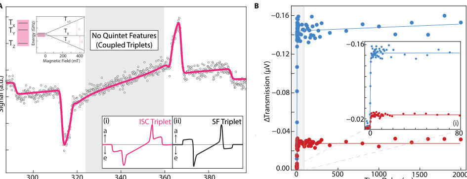
<figcaption class="paper-figure-caption"><b>Fig 2.</b> Fig. 2. Triplet formation pathway from transient EPR and transient absorption microscopy. (A) X-band transient EPR. Powdered DHP/Pc after 100 ns, 527 nm laser pulse; field stepped from 287 to 397 mT; laser pulse energy of 2.5 mJ per pulse and microwave power of ≈0.01 mW were used. Emissive (e) and absorptive (a) features at ≈315 and ≈365 mT correspond to |T0⟩→|T−1⟩and |T0⟩→|T+1⟩transitions (inset). eeeaaa polarization profile supports an ISC-generated long- lived triplet. Shaded region contains no resolved shoulders or peaks assignable to quintet triplet-pair states [15]. (B) Transient Absorption Microscopy (TAM). Excited state absorption (ESA) signals from a DHP/Pc cocrystal measured at...</figcaption>
</figure>
<figure class="paper-figure-card">
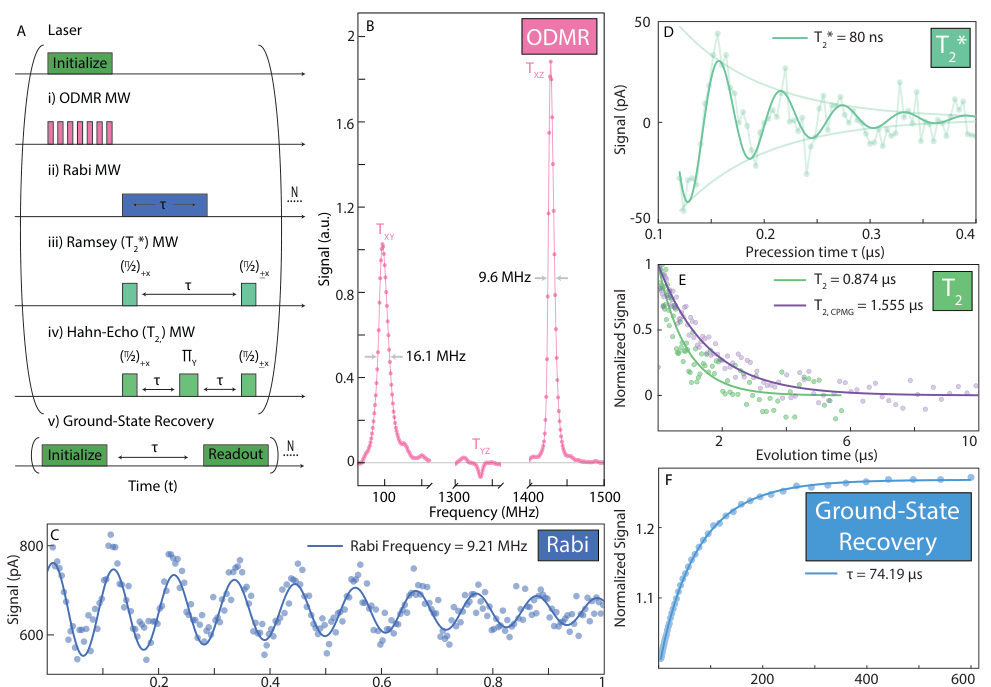
<figcaption class="paper-figure-caption"><b>Fig 3.</b> Fig. 3. Room-temperature ODMR and coherent control of dense pentacene cocrystal. (A) Pulse sequences: (i) ODMR, (ii) Rabi, (iii) Ramsey, (iv) Hahn echo, and (v) ground-state recovery. (B) Continuous-wave DHP/Pc ODMR spectrum; resonances at 97, 1334, and 1428 MHz correspond to TXY, TYZ, and TXZ transitions in photoexcited |T1⟩. ≈30 mW laser power at sample and ≈1 W microwave power for the dataset shown. (C) Rabi oscillations at 9.2 MHz are shown with solid line fit. (D) Ramsey measurement gives T ∗ 2 = 80 ns. (E) Hahn-echo T2 = 0.874 µs extends to 1.6 µs with CPMG-4. (F) |T1⟩→|S0⟩ ground-state recovery fit to a stretched exponential with time constant 74.19 µs and β = 0.93.</figcaption>
</figure>
<figure class="paper-figure-card">
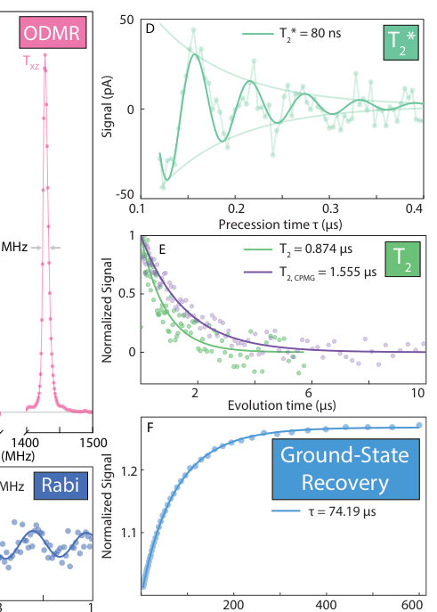
<figcaption class="paper-figure-caption"><b>Fig 4.</b> Fig. 3C shows optically accessible coherent control of the electron spin ensemble via Rabi oscillations at 9.2 MHz with the pulse sequence shown in Fig. 3A(ii). An optically detected transverse electron-spin coherence time T ∗ 2 = 80 ns is extracted from detuned Ramsey fringes in Fig. 3D with the pulse sequence in Fig. 3A(iii). The shortened T ∗ 2 relative to the PDP sample is con-</figcaption>
</figure>
<figure class="paper-figure-card">
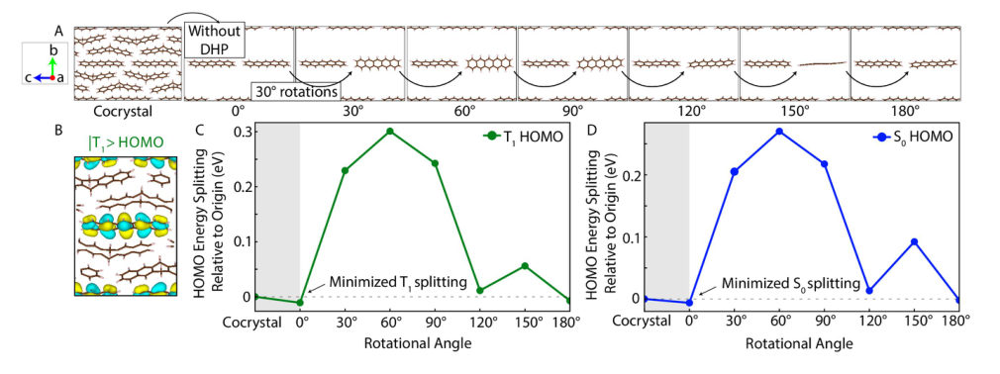
<figcaption class="paper-figure-caption"><b>Fig 5.</b> Fig. 4. DFT links suppressed electronic coupling at high pentacene density to pentacene dimer configuration. (A) Unit-cell geometries used to rotate horizontal nearest-neighbour pentacene dimer. (B) Representative T1 HOMO distribution for pentacene in cocrystal geometry. (C,D) Calculated T1 and S0 HOMO energy splitting versus rotation angle. Native cocrystal angle lies near global splitting minimum in both states, consistent with weak intermolecular electronic coupling and retained ODMR in dense pentacene ensemble.</figcaption>
</figure>
</div>

<p><strong>Summary.</strong> The authors report on a novel pentacene cocrystal that achieves an unprecedentedly high density of addressable spin centers while maintaining long spin coherence times at room temperature. By combining spectroscopic measurements with DFT calculations, they demonstrate that the specific molecular packing and energy offsets within the cocrystal suppress detrimental interactions, making it a promising material for quantum sensing.</p>
<p><strong>Why it may be interesting.</strong> This work directly addresses the fundamental trade-off between material density and quantum coherence, providing concrete structural and energetic design rules (molecular packing and triplet energetics) for realizing practical, high-density quantum sensors.</p>
<details>
<summary>Detailed structure</summary>
<p><strong>Main problem.</strong> The central challenge is increasing the spin-site density in quantum materials for sensing while preventing coherence loss due to strong dipolar interactions and excited-state transport.</p>
<p><strong>Main result.</strong> The DHP/Pc cocrystal achieves ultra-high spin-site density with preserved microsecond spin coherence and room-temperature coherent control, demonstrating cocrystallization as a viable design strategy.</p>
<p><strong>Method.</strong> The study combines time-resolved spectroscopy (EPR, absorption) to measure coherence and triplet dynamics with DFT calculations to model electronic coupling and energy barriers.</p>
<p><strong>Model / system.</strong> The physical system is a 2:1 cocrystal of 6,13-dihydropentacene and pentacene (DHP/Pc), which serves as a dense platform for addressable spin centers.</p>
<p><strong>Key observables.</strong> Microsecond spin coherence ($T_2$), room-temperature Optically Detected Magnetic Resonance (ODMR) resonances, triplet sublevel polarization ratios ($P_X:P_Y:P_Z$), and electronic coupling strengths.</p>
<p><strong>Important parameters / regimes.</strong> Volumetric spin-site density ($9.51 	imes 10^{20} 	ext{ cm}^{-3}$), coherence times ($\sim 1 \mu	ext{s}$), and the energy barrier preventing triplet migration ($\approx 2.2 	ext{ eV}$).</p>
<p><strong>Assumptions / limitations.</strong> The analysis assumes that molecular packing and coformer triplet energetics can be independently tuned to maintain coherence in dense systems.</p>
<p><strong>Figures summary.</strong> Figures show SEM/XRD confirming the dense lattice structure, EPR/TAM comparing triplet generation pathways (ISC vs. SF), and ODMR/CPMG sequences demonstrating coherent control and linewidth measurements.</p>
<p><strong>Paper structure.</strong> The paper first establishes the problem of density vs. coherence, then uses spectroscopy (EPR/ODMR) to characterize the high-density state, followed by DFT calculations to provide a theoretical underpinning for the observed coherence preservation mechanism.</p>
</details>
<details>
<summary>Abstract</summary>
<p>Maximizing the number of addressable spins within a fixed volume can improve ensemble quantum sensor sensitivity, but dense packing usually increases dipolar interactions and excited-state transport, shortening coherence and suppressing optical readout. Here we report a 2:1 cocrystal of 6,13-dihydropentacene and pentacene (DHP/Pc) containing 33.3 mol% pentacene ($3.3\times10^{5}$ ppm; $9.51\times10^{20}$ cm$^{-3}$), a volumetric spin-site density more than two orders of magnitude above previous benchmarks, NV-diamond and pentacene-doped p-terphenyl (PDP). Despite this density, DHP/Pc exhibits microsecond spin coherence, room-temperature optically detected magnetic resonance and coherent control. Time-resolved measurements indicate that the long-lived triplet population is generated predominantly by intersystem crossing and exhibits strong, non-thermal sublevel polarization. Density-functional theory calculations further suggest that the native cocrystal geometry weakens electronic coupling between neighboring pentacenes, while the higher DHP triplet energy creates a barrier to triplet migration. These results identify molecular packing and coformer triplet energetics as complementary design parameters for preserving coherence in high spin-site density systems, demonstrating cocrystallization as a promising route to dense, optically addressable spin materials for room-temperature ensemble quantum sensing.</p>
</details>
<p><sub><a href="#top">↑ back to top</a></sub></p>

<p><a id="paper-2609.28671"></a></p>
<h3 id="large-area-sns-crystals-by-controlled-sn-s-chemical-vapor-deposition-growth-optimization-morphology-and-raman-characterization"><a href="http://arxiv.org/abs/2609.28671v1">Large-Area SnS Crystals by Controlled Sn-S Chemical Vapor Deposition: Growth Optimization, Morphology, and Raman Characterization</a></h3>
<p><strong>Authors:</strong> Bilal Ahmed<br>
<strong>Type:</strong> experiment · <strong>Category:</strong> other · <strong>PDF:</strong> <a href="https://arxiv.org/pdf/2609.28671v1">https://arxiv.org/pdf/2609.28671v1</a><br>
<strong>Analysis basis:</strong> full PDF text, analyzed in chunks
<strong>Topic relevance:</strong> <code>analog quantum simulation</code> <strong>1/5</strong> · <code>driven-dissipative phase transition</code> <strong>1/5</strong> · <code>non-equilibrium universality</code> <strong>1/5</strong></p>
<div class="figure-strip-hint">↔ Scroll figures horizontally</div>
<div class="paper-figures-scroll">
<figure class="paper-figure-card">

<figcaption class="paper-figure-caption"><b>Fig 1.</b> Figure 1: Schematic of the CVD configuration used for the growth of large-area SnS crystals. Separate elemental Sn and S sources are positioned in different temperature regions, with the substrate located downstream from the precursor sources.</figcaption>
</figure>
<figure class="paper-figure-card">

<figcaption class="paper-figure-caption"><b>Fig 2.</b> Figure 2: X-ray diffraction pattern of the as-grown SnS crystals. The strong reflection near 2θ ≈32◦</figcaption>
</figure>
<figure class="paper-figure-card">

<figcaption class="paper-figure-caption"><b>Fig 3.</b> Figure 3: Room-temperature Raman spectrum of the as-grown SnS crystal. Six characteristic SnS modes are observed at 39.3, 48.8, 95.2, 165.0, 193.1, and 219.1 cm−1. The low-frequency modes near 39 and 49 cm−1 are particularly well resolved.</figcaption>
</figure>
<figure class="paper-figure-card">

<figcaption class="paper-figure-caption"><b>Fig 4.</b> Figure 4: Morphological and surface characterization of large-area SnS crystals. (a,b) SEM images showing the lateral dimensions and continuous morphology. (c,d) AFM images of a representative surface region showing relatively low nanoscale roughness.</figcaption>
</figure>
<figure class="paper-figure-card">

<figcaption class="paper-figure-caption"><b>Fig 5.</b> Figure 5: Comparison of SnS crystal morphology on SiO2/Si and mica. (a,b) Crystals grown on SiO2/Si showing large lateral dimensions with irregular or fractured edges. (c,d) Crystals grown on mica showing more regular square and rectangular morphologies while retaining large lateral dimensions.</figcaption>
</figure>
</div>

<p><strong>Summary.</strong> This work reports on the successful growth of large-area Tin monosulfide (SnS) single crystals using controlled Chemical Vapor Deposition (CVD). By optimizing precursor temperatures and gas flows, the authors achieved crystals up to $350 \mu	ext{m}$ in size, confirmed by XRD and characterized by specific Raman phonon modes. The findings establish a reliable, practical method for synthesizing high-quality SnS materials for future optoelectronic research.</p>
<p><strong>Why it may be interesting.</strong> While primarily materials science, the precise control over crystal growth kinetics and phase purity using gas-phase deposition techniques is relevant to understanding non-equilibrium processes and surface science, which touches upon open quantum systems concepts.</p>
<details>
<summary>Detailed structure</summary>
<p><strong>Main problem.</strong> The primary challenge addressed is obtaining large-area, morphologically well-defined Tin monosulfide (SnS) crystals, which is crucial for its application in optoelectronics and ferroic devices.</p>
<p><strong>Main result.</strong> The authors successfully established a practical growth window using controlled Chemical Vapor Deposition (CVD) to grow large-area SnS crystals (up to 350 $\mu$m) with high crystallinity and smooth surfaces.</p>
<p><strong>Method.</strong> The study employed CVD using separate elemental Sn and S precursors, followed by comprehensive characterization using XRD, Raman spectroscopy, SEM, and AFM.</p>
<p><strong>Model / system.</strong> The physical system is the layered IV-VI semiconductor SnS. Growth is controlled by tuning multiple CVD parameters, including precursor temperatures ($ ext{Sn}$ source $\sim 750^\circ	ext{C}$, $  ext{S}$ source $\sim 230^\circ	ext{C}$), substrate temperature ($650–680^\circ	ext{C}$), and gas flow rates ($ ext{Ar}/    ext{H}_2$).</p>
<p><strong>Key observables.</strong> Large lateral dimensions ($\sim 350 \mu	ext{m}$), dominant $ ext{SnS}$ (111) XRD reflection, six characteristic Raman phonon modes (e.g., $39.3, 48.8, 95.2 	ext{ cm}^{-1}$), and smooth nanoscale surface morphology.</p>
<p><strong>Important parameters / regimes.</strong> Optimized CVD conditions: $ ext{Sn}$ source at $750^\circ	ext{C}$, $   ext{S}$ source at $230^\circ	ext{C}$, substrate at $650–680^\circ	ext{C}$, and $  ext{Ar}/    ext{H}_2$ flow of $120/10 	ext{ sccm}$.</p>
<p><strong>Assumptions / limitations.</strong> The study assumes that controlling the CVD environment allows for the selective growth of the desired SnS phase over competing tin-sulfide phases.</p>
<p><strong>Figures summary.</strong> The figures likely show the CVD setup, the XRD pattern confirming the pure SnS phase, the Raman spectrum displaying the six characteristic phonon modes, and SEM/AFM images illustrating the large, continuous crystal morphology.</p>
<p><strong>Paper structure.</strong> The paper follows a standard experimental structure: introduction of the material's potential, detailed description of the CVD methodology and parameter optimization, presentation of characterization results (XRD, Raman, morphology), and concluding with the establishment of a practical growth window.</p>
</details>
<details>
<summary>Abstract</summary>
<p>Tin monosulfide (SnS) is a layered IV-VI semiconductor with strong in-plane anisotropy and promising properties for optoelectronic and ferroic applications. However, obtaining large, continuous, and morphologically well-defined SnS crystals remains challenging. Here, we report the growth of large-area SnS crystals using chemical vapor deposition with separate elemental Sn and S precursors. By controlling the precursor temperatures, source positions, substrate temperature, carrier-gas flow, and hydrogen flow, we obtain SnS crystals with lateral dimensions approaching 350 micrometers. The optimized growth occurs with the Sn source at approximately 750 degrees C, the S source at approximately 230 degrees C, and the substrate maintained near 650-680 degrees C, using Ar/H2 flow rates of 120/10 sccm. X-ray diffraction shows a dominant SnS (111) reflection with no detectable secondary crystalline tin-sulfide phase within the measurement sensitivity. Raman spectroscopy reveals six characteristic SnS phonon modes at approximately 39.3, 48.8, 95.2, 165.0, 193.1, and 219.1 cm^-1. In particular, the low-frequency modes near 39 and 49 cm^-1 are clearly resolved with FWHM values of approximately 2.52 and 2.37 cm^-1, respectively. SEM and AFM measurements further show large continuous crystals and a relatively smooth nanoscale surface. Growth on mica produces more regular square and rectangular flakes, with lateral dimensions approaching 300 x 300 micrometers, while crystals grown on SiO2/Si are more frequently fractured or irregular at their edges. These results demonstrate a practical growth window for obtaining large-area SnS crystals suitable for further optical, electrical, and device studies.</p>
</details>
<p><sub><a href="#top">↑ back to top</a></sub></p>

<p><a id="paper-2609.29337"></a></p>
<h3 id="nonorthogonal-variational-quantum-simulation-for-quantum-chemistry"><a href="http://arxiv.org/abs/2609.29337v1">Nonorthogonal variational quantum simulation for quantum chemistry</a></h3>
<p><strong>Authors:</strong> Zongkang Zhang, Jiajun Ren, Xiao Yuan<br>
<strong>Type:</strong> theory · <strong>Category:</strong> quantum information and computing · <strong>PDF:</strong> <a href="https://arxiv.org/pdf/2609.29337v1">https://arxiv.org/pdf/2609.29337v1</a><br>
<strong>Analysis basis:</strong> full PDF text, analyzed in chunks
<strong>Topic relevance:</strong> <code>Keldysh / 2PI / non-Gaussian methods</code> <strong>1/5</strong> · <code>analog quantum simulation</code> <strong>1/5</strong> · <code>quantum measurements</code> <strong>1/5</strong></p>
<div class="figure-strip-hint">↔ Scroll figures horizontally</div>
<div class="paper-figures-scroll">
<figure class="paper-figure-card">

<figcaption class="paper-figure-caption"><b>Fig 1.</b> FIG. 1. Schematic of nonorthogonal variational quantum simulation (NOVQS). The algorithm proceeds as follows: First, the variational wavefunction is represented by a set of parameterized quantum circuits constructed from fermionic simulation (fSim) gates. Second, the quantum Fisher information matrix M and the force vector V are evaluated on quantum computers. Subsequently, the parameters at time t+δt are updated from their values at time t using M and V , applicable to both real and imaginary time evolution (τ ←t). This iterative process is repeated for Nt = T/δt steps, where T denotes the total evolution duration.</figcaption>
</figure>
<figure class="paper-figure-card">

<figcaption class="paper-figure-caption"><b>Fig 2.</b> FIG. 2. Quantum circuit decomposition of the fSim gate de- fined in Eq. (25). The circuit implements the gate up to an irrelevant global phase e−iφ/4, where RZ(α) = e−iαZ/2 and RY(α) = e−iαY/2.</figcaption>
</figure>
<figure class="paper-figure-card">

<figcaption class="paper-figure-caption"><b>Fig 3.</b> FIG. 3. Structure of a single layer in the parameterized quan- tum circuit, taking M = 3 spatial orbitals as an example. The fSim gates are arranged in a ’brickwork’ pattern across 2M sublayers, followed by a final sublayer of RZ rotation gates. Upon completion of one block, every pair of qubits has interacted exactly once, and the qubit ordering is re- versed. The fSim gate is defined in Eq. (25), and rotation gate RZ(λ) = e−iλZ/2.</figcaption>
</figure>
<figure class="paper-figure-card">

<figcaption class="paper-figure-caption"><b>Fig 4.</b> FIG. 5. Ancilla-free Hadamard test quantum circuit for the estimation of expressions in M and V . UGHZ = QNe−2 i=0 CNOTi,i+1H0, which prepares the Greenberger- Horne-Zeilinger (GHZ) state |GHZ⟩= 1 √</figcaption>
</figure>
<figure class="paper-figure-card">

<figcaption class="paper-figure-caption"><b>Fig 5.</b> FIG. 6. The quantum circuit used to extract the interfer- ometric classical shadow of nonorthogonal states (Uc = Uj) and tangent states (Uc = Rj,k,i). Combined with the classi- cal shadow of nonorthogonal states, we can predict M and V . The phase gate S = |0⟩⟨0| + i|1⟩⟨1|. Nearest-neighbor CNOT gates are implemented across the first Ne qubits. The unitary Urand is selected randomly from a fixed ensemble U, which is a Clifford group.</figcaption>
</figure>
</div>

<p><strong>Summary.</strong> This paper introduces Nonorthogonal Variational Quantum Simulation (NOVQS) to tackle the challenge of simulating quantum dynamics on near-term quantum computers. NOVQS represents the state as a linear combination of shallow parameterized quantum circuits, allowing the time evolution to be governed by parameter dynamics. The method proves that this approach can maintain high expressivity while respecting strict circuit-depth constraints.</p>
<p><strong>Why it may be interesting.</strong> This work directly addresses the resource limitations (circuit depth) of VQS for dynamics, offering a hardware-efficient alternative for simulating complex quantum dynamics on near-term quantum processors.</p>
<details>
<summary>Detailed structure</summary>
<p><strong>Main problem.</strong> Dynamically simulating quantum many-body systems is challenging due to wavefunction complexity and entanglement growth, limiting standard quantum simulation techniques.</p>
<p><strong>Main result.</strong> The proposed Nonorthogonal Variational Quantum Simulation (NOVQS) method shows that using a collection of shallow PQCs can match or outperform much deeper PQCs in simulating quantum dynamics.</p>
<p><strong>Method.</strong> NOVQS represents the evolving state as a linear combination of parameterized quantum states, allowing time evolution to be mapped onto the time evolution of the parameters using equations of motion derived from McLachlan's variational principle.</p>
<p><strong>Model / system.</strong> The method is applied to quantum chemistry, simulating the time evolution governed by a second-quantized electronic-structure Hamiltonian, which is represented in Pauli form.</p>
<p><strong>Key observables.</strong> The Quantum Fisher Information Matrix (M) and the force vector (V) are key observables used to derive the equations of motion for the parameters.</p>
<p><strong>Important parameters / regimes.</strong> Circuit depth and the number of parameterized quantum circuits (PQCs) are critical resources, with a trade-off identified between these two.</p>
<p><strong>Assumptions / limitations.</strong> The primary approximation is using a nonorthogonal multistate ansatz $|\Phi(\vec{	heta}(t))
angle = \sum_{j=1}^{n} c_j(t) |\varphi_j(\vec{	heta}_j(t))
angle$ to represent the state during time evolution.</p>
<p><strong>Figures summary.</strong> Figure 1 schematically illustrates the NOVQS process, showing the definition of the variational wavefunction, the evaluation of M and V on quantum computers, and the subsequent parameter update for time evolution.</p>
<p><strong>Paper structure.</strong> The paper introduces NOVQS as an extension of NOVQE to dynamics, details the mathematical framework involving the linear combination ansatz and the derivation of the parameter equations of motion (EOMs) using McLachlan's principle, and validates the method via numerical simulations on molecular systems.</p>
</details>
<details>
<summary>Abstract</summary>
<p>Dynamical simulation of quantum many-body systems is a central task in quantum chemistry and requires efficient wavefunction representations. Although tensor-network and neural-network quantum states have achieved considerable success in ground-state calculations, entanglement growth hinders their application to quantum dynamics. Quantum computing may offer a route to quantum advantage, but algorithms such as Trotterization generally require fault-tolerant quantum computers, whereas near-term hardware supports only limited circuit sizes. Variational quantum simulation (VQS) instead represents the evolving state with a single shallow, fixed-size parameterized quantum circuit (PQC). Here, we introduce nonorthogonal variational quantum simulation (NOVQS), which applies linear combinations of parameterized quantum states to real- and imaginary-time evolutions. We design a shallow, hardware-friendly ansatz tailored to second-quantized electronic-structure Hamiltonians, together with resource-efficient protocols for measuring the matrices and vectors in the parameter equations of motion. Error analysis and resource estimation are also provided. Numerical simulations of hydrogen chains and the nitrogen molecule demonstrate that a collection of shallow, or even single-layer, PQCs can match or outperform a much deeper PQC in VQS. In particular, we identify a trade-off between circuit number and depth. NOVQS therefore provides a flexible route to enhancing wavefunction expressivity under circuit-depth constraints, making it a promising framework for quantum dynamics simulations on near-term quantum processors.</p>
</details>
<p><sub><a href="#top">↑ back to top</a></sub></p>

<p><a id="paper-2609.29053"></a></p>
<h3 id="perfect-resonance-and-fragile-localization-suppression-in-correlated-disordered-chains"><a href="http://arxiv.org/abs/2609.29053v1">Perfect resonance and fragile localization suppression in correlated disordered chains</a></h3>
<p><strong>Authors:</strong> Zhixuan Zhao, Jun Li<br>
<strong>Type:</strong> theory · <strong>Category:</strong> disordered systems and neural networks · <strong>PDF:</strong> <a href="https://arxiv.org/pdf/2609.29053v1">https://arxiv.org/pdf/2609.29053v1</a><br>
<strong>Analysis basis:</strong> full PDF text, analyzed in chunks
<strong>Topic relevance:</strong> <code>Frenkel-Kontorova</code> <strong>1/5</strong> · <code>analog quantum simulation</code> <strong>1/5</strong> · <code>methods for driven-dissipative</code> <strong>1/5</strong></p>
<div class="figure-strip-hint">↔ Scroll figures horizontally</div>
<div class="paper-figures-scroll">
<figure class="paper-figure-card">

<figcaption class="paper-figure-caption"><b>Fig 1.</b> FIG. 1. Local exchanges preserve the resonance but alter its neighborhood. (a) Transmission in the same local-exchange ensemble as Eq. (4), for depth r = 2, sixteen-cell blocks and N = 16384. Curves are means of 256 paired independent samples; shading gives the 10th–90th realization percentiles, not confidence intervals. Each block makes at most one exchange attempt, with probability psw at a uniformly chosen internal boundary. All samples have TN(0) = 1. (b) Exact quadratic coefficients Γ2 = limE→0 γ/E2 and the graph lower bounds for two fixed recursion depths. The horizontal variable is probability per block; the two depths have different block lengths. Parameters are h = 2, g = 1.2, toff...</figcaption>
</figure>
<figure class="paper-figure-card">

<figcaption class="paper-figure-caption"><b>Fig 2.</b> FIG. 2. Ordering controls transmission at equal resources. (a) Balanced seeds, recursive words and repeated-seed controls; purple, white and red denote t−, t0, t+. Each depth has equal block length, amplitude distribution and entropy across the two ordering schemes. (b) Transmission at N = 16384, zero offset: medians and 10–90% realization bands from 256 sequences paired across ordering schemes and energies. (c,d) Positive energies guaranteed to satisfy Pr(T &lt; 0.9) &lt; 0.1 versus common offset and length. Each marker has an interval-arithmetic enclosure; connecting lines guide the eye. Parameters are those of Fig. 1. The offset changes a at fixed coupling imbalances ui, with intercell and...</figcaption>
</figure>
<figure class="paper-figure-card">

<figcaption class="paper-figure-caption"><b>Fig 3.</b> Figure 1: The separate four-word replacement ensemble. Left: mean excess resistance against the replacement probability prep at N = 16384 and E = 0.002. Right: the same mean against the microscopic length scale s = nv for identity, offset, and saturating calibrations, compared with (es −1)/2. Values follow deterministic high- precision 4 × 4 moment propagation. These curves concern whole-word replacement, not the adjacent-exchange ensemble of main-text Fig. 1.</figcaption>
</figure>
</div>

<p><strong>Summary.</strong> This theoretical work analyzes how spatial correlations in disordered quantum chains can induce perfect transmission resonances. The key finding is that while the central resonance remains robust against local swaps, the surrounding transport spectrum is degraded, showing a quadratic dependence on energy detuning. This suggests that structural ordering protects the resonance peak but not the overall transport properties.</p>
<p><strong>Why it may be interesting.</strong> The finding that local disorder affects the transport <em>around</em> a resonance, rather than the resonance itself, provides a novel diagnostic tool for characterizing quantum transport in disordered materials that is sensitive to local structural integrity.</p>
<details>
<summary>Detailed structure</summary>
<p><strong>Main problem.</strong> The study investigates how spatial correlations in disordered quantum chains can create perfectly transmitting resonances, and critically, how this protection fails when subjected to local ordering errors like neighboring cell swaps.</p>
<p><strong>Main result.</strong> While perfect ordering ensures a central resonance peak remains perfectly transparent, local swaps restore an inverse localization length proportional to the square of the energy detuning, proving that spatial ordering protects the peak but not the surrounding transport.</p>
<p><strong>Method.</strong> The analysis uses transfer matrix methods, graph theory concepts (minimum spanning-tree weight), and high-precision numerical calculations to derive lower bounds for the localization rate induced by local disorder.</p>
<p><strong>Model / system.</strong> The model is a correlated disordered quantum chain, built from blocks of fixed length and composition, analyzed using single-channel transfer matrices derived from a microscopic Hamiltonian involving core orbitals and auxiliary dimers.</p>
<p><strong>Key observables.</strong> Transmission spectrum ($T_N(E)$), localization rate ($\gamma(E)$), and the quadratic coefficient ($\Gamma_2$) describing the energy dependence of scattering.</p>
<p><strong>Important parameters / regimes.</strong> Swap probability ($p_{sw}$), energy detuning ($E$), and the length of the chain ($N$).</p>
<p><strong>Assumptions / limitations.</strong> The analysis focuses on errors that involve swapping two neighboring cells without changing the overall count of each cell type.</p>
<p><strong>Figures summary.</strong> Figures illustrate that local exchanges preserve the resonance peak transmission ($T_N(0)=1$) but alter the surrounding spectrum, and they compare the derived quadratic localization coefficient ($\Gamma_2$) against rigorous theoretical lower bounds.</p>
<p><strong>Paper structure.</strong> The paper progresses from establishing the perfect resonance condition via spatial correlations, to quantifying the effect of local swaps using transfer matrices and graph theory, and finally confirming the quadratic energy dependence of the restored localization rate through detailed numerical and analytical bounds.</p>
</details>
<details>
<summary>Abstract</summary>
<p>Spatial correlations can suppress scattering in disordered chains and produce perfectly transmitting resonances. The practical value of this protection, however, depends not on the resonance peak itself but on the width of the surrounding transmission window and its sensitivity to local ordering errors. We show that a resonance can remain exactly transparent at its center while arbitrarily rare adjacent-swap errors restore an inverse localization length proportional to the square of the energy detuning. For lossless single-channel chains assembled from independent blocks of fixed length and composition, this positive quadratic term is guaranteed by a local scattering invariant and holds for every arrangement and every fixed swap probability between zero and one. With exact tuning and matched contacts, the central transmission remains unity. A microscopic quantum chain exhibits both higher-order suppression of scattering in the ideal recursive arrangement and the predicted response to local exchanges. These results reveal a limitation of spatial ordering that is invisible to a measurement at the resonance alone: spatial ordering protects the resonance peak, not the transport around it. The effect can therefore be tested experimentally by measuring transmission spectra before and after exchanges, without identifying microscopic defects.</p>
</details>
<p><sub><a href="#top">↑ back to top</a></sub></p>

<p><a id="paper-2609.28726"></a></p>
<h3 id="associative-memory-for-quantum-entangled-states"><a href="http://arxiv.org/abs/2609.28726v1">Associative Memory for Quantum Entangled States</a></h3>
<p><strong>Authors:</strong> Qiyuan Hu, Kartiek Agarwal, Ivar Martin<br>
<strong>Type:</strong> theory · <strong>Category:</strong> disordered systems and neural networks · <strong>PDF:</strong> <a href="https://arxiv.org/pdf/2609.28726v1">https://arxiv.org/pdf/2609.28726v1</a><br>
<strong>Analysis basis:</strong> full PDF text, analyzed in chunks
<strong>Topic relevance:</strong> <code>analog quantum simulation</code> <strong>1/5</strong></p>
<div class="figure-strip-hint">↔ Scroll figures horizontally</div>
<div class="paper-figures-scroll">
<figure class="paper-figure-card">

<figcaption class="paper-figure-caption"><b>Fig 1.</b> FIG. 1. (a) The instability probability punstable(N, K) as a function of the rescaled memory load K/N 3 for different sys- tem sizes N. The dashed gray line indicates the threshold p0 used to define the finite-size storage capacity Kq max. (b) Kq max, defined as the maximum number of stored memories for which the instability probability is below p0 = 5%, as a function of N. The data are well described by a cubic scaling, with a fitted coefficient of approximately 0.015.</figcaption>
</figure>
<figure class="paper-figure-card">

<figcaption class="paper-figure-caption"><b>Fig 2.</b> Fig. 1a shows punstable as a function of K/N 3 for different system sizes. The data collapse onto a single curve, pro- viding numerical evidence for the predicted N 3 scaling of the storage capacity. For the system sizes accessible to our simulations, the logarithmic correction is too weak to be resolved numerically.</figcaption>
</figure>
<figure class="paper-figure-card">

<figcaption class="paper-figure-caption"><b>Fig 3.</b> FIG. 2. Hybridization metric W defined in Eq. 9 as a function of (a) the number of memories K and (b) K/N 3. The error bars denote one standard deviation. The average collapses onto a single curve. The standard deviation increases sharply beyond the critical value Kq max/N 3 ≈0.015.</figcaption>
</figure>
<figure class="paper-figure-card">

<figcaption class="paper-figure-caption"><b>Fig 4.</b> FIG. 3. Maximum Mattis overlap between the lowest-energy eigenstate of e Hq 2 (Eq. 10) with S2 tot = 0 and the stored mem- ories as a function of memory load K for different system sizes N. A transition appears to occur at some capacity KC(N) — for K &lt; KC(N), increasing N enhances the over- lap with a single memory, indicating the retrieval phase, while for K &gt; KC(N), increasing N decreases the overlap, indicat- ing loss of memory. The capacity KC(N) also drifts to larger values with increasing N, as expected.</figcaption>
</figure>
<figure class="paper-figure-card">

<figcaption class="paper-figure-caption"><b>Fig 5.</b> FIG. 4. (a) Average sum of squared concurrences ¯C2</figcaption>
</figure>
</div>

<p><strong>Summary.</strong> This work extends associative memory concepts to quantum entangled states, using a projector-sum Hamiltonian approach. By analyzing the stability and capacity, the authors demonstrate that storing entangled dimer coverings allows for a storage capacity that scales superlinearly with system size compared to classical models. This suggests a potential quantum advantage in information encoding.</p>
<p><strong>Why it may be interesting.</strong> The explicit comparison of capacity scaling between classical and quantum memory models provides theoretical insight into potential quantum advantages in information storage, which is highly relevant for quantum computation and quantum information theory.</p>
<details>
<summary>Detailed structure</summary>
<p><strong>Main problem.</strong> The paper generalizes associative memory models from classical spin states to store intrinsically quantum entangled states, aiming to determine the storage capacity.</p>
<p><strong>Main result.</strong> The capacity for storing entangled dimer coverings scales with a higher power of the system size ($O(N^3/\log N)$) compared to classical counterparts, suggesting a potential quantum advantage.</p>
<p><strong>Method.</strong> The analysis involves constructing a Hamiltonian using a truncated projector-sum method and analyzing memory stability by examining local energy changes and the probability of instability.</p>
<p><strong>Model / system.</strong> The model uses a quantum associative memory based on dimer singlet coverings of an N-spin system. The Hamiltonian is constructed as a projector-sum, $H_q = -\sum_\mu |\psi_\mu
angle\langle\psi_\mu|$, and is analyzed via its expansion into interaction terms.</p>
<p><strong>Key observables.</strong> Storage Capacity ($K$), Probability of Instability ($  ext{Pr}(    ext{instability})$), Maximum Absolute Mattis Overlap ($m_c^{\max}$), and the scaling of these quantities with system size $N$.</p>
<p><strong>Important parameters / regimes.</strong> System size $N$, number of stored patterns $K$, and the order of the Hamiltonian expansion (e.g., $H_q^{(2)}$).</p>
<p><strong>Assumptions / limitations.</strong> The stored patterns are treated as approximate eigenstates due to Hamiltonian truncation, and the analysis relies on approximations like the Central Limit Theorem and vanishing rare-event tail contributions in the thermodynamic limit.</p>
<p><strong>Figures summary.</strong> Figures illustrate the scaling of instability probability and finite-size capacity for both classical and quantum models, confirming the predicted higher scaling for the quantum case.</p>
<p><strong>Paper structure.</strong> The paper progresses by first defining the quantum memory Hamiltonian, analyzing its stability against local perturbations (bond rearrangements), and then comparing the resulting capacity scaling to established classical models like the Hopfield network using rigorous probability bounds.</p>
</details>
<details>
<summary>Abstract</summary>
<p>We generalize the canonical Hopfield model of associative memory, which stores classical states of individual spins, to store entangled quantum states. The construction is based on truncated projector-sum Hamiltonian, and we explicitly consider a special case that stores dimer singlet coverings of a spin-1/2 system. We analyze the stability of the stored memories and find that the capacity -- the number of stable patterns -- scales faster with the system size than one would expect from a naive analogy with the standard Hopfield model, suggesting a possible quantum advantage.</p>
</details>
<p><sub><a href="#top">↑ back to top</a></sub></p>

<p><a id="paper-2609.28968"></a></p>
<h3 id="beyond-the-kagome-layer-interlayer-origin-of-the-flat-band-in-fesn"><a href="http://arxiv.org/abs/2609.28968v1">Beyond the Kagome Layer: Interlayer Origin of the Flat Band in FeSn</a></h3>
<p><strong>Authors:</strong> Shimin Zhang, Bipasa Samanta, Ho Viet Thang, Alexandru B. Georgescu<br>
<strong>Type:</strong> theory · <strong>Category:</strong> strongly correlated electrons · <strong>PDF:</strong> <a href="https://arxiv.org/pdf/2609.28968v1">https://arxiv.org/pdf/2609.28968v1</a><br>
<strong>Analysis basis:</strong> full PDF text, analyzed in chunks
<strong>Topic relevance:</strong> <code>analog quantum simulation</code> <strong>1/5</strong></p>
<div class="figure-strip-hint">↔ Scroll figures horizontally</div>
<div class="paper-figures-scroll">
<figure class="paper-figure-card">

<figcaption class="paper-figure-caption"><b>Fig 1.</b> FIG. 1. (a) side view and (b) top view of FeSn kagome lattice with unit cell indicated by black line</figcaption>
</figure>
<figure class="paper-figure-card">

<figcaption class="paper-figure-caption"><b>Fig 2.</b> FIG. 2. DFT band structures and projected density of states (PDOS) of kagome FeSn under different magnetic configurations: (a) antiferromagnetic (AFM), (b) ferromagnetic (FM), and (c) nonmagnetic (NM) states. The left panels show the spin-resolved band structures, and the right panels show the corresponding Fe-d and Sn-p projected density of states. The black dashed horizontal line marks the Fermi level. The highlighted regions indicate the flat-band-related features discussed in the text: the A-lift feature is marked by blue rectangles, and the bump-like feature is marked by red rectangles. The blue dashed horizontal lines indicate the energy level of each flat-band feature.</figcaption>
</figure>
<figure class="paper-figure-card">

<figcaption class="paper-figure-caption"><b>Fig 3.</b> FIG. 3. Comparison of the electronic structures and Brillouin zones of the primitive 1c cell and doubled 2c supercell. (a) FM and NM band structures calculated using the 1c and 2c cells. (b) Schematic Brillouin zones illustrating the folding along kz. Doubling the lattice periodicity along c halves the Brillouin zone in the out-of-plane direction. The primitive basal Γ−M−K−Γ plane remains at kz = 0, whereas the primitive zone-boundary points A1c, L1c, and H1c at kz = π/c fold onto Γ, M, and K, respectively, in the 2c Brillouin zone. The points A2c, L2c, and H2c define the zone-boundary plane of the doubled cell at kz = π/2c.</figcaption>
</figure>
<figure class="paper-figure-card">

<figcaption class="paper-figure-caption"><b>Fig 4.</b> FIG. 4. Double-layer tight-binding structure of FeSn. The colored bonds indicate the hopping channels included in the model: intralayer Fe–Fe hopping (blue), interlayer Fe–Fe hop- ping (purple), intralayer Fe–Sn hopping (orange), interlayer Fe–Sn hopping (green), and intralayer Sn–Sn hopping (grey).</figcaption>
</figure>
<figure class="paper-figure-card">

<figcaption class="paper-figure-caption"><b>Fig 5.</b> FIG. 5. Representative tight-binding candidates for the A-lift flat-band feature. The blue bands indicate the tracked bands selected by the A-lift score, and the projected density of states is shown beside each band structure. (a) FM-like configuration with strong interlayer Fe–Fe hopping, |α| = 1, and absent intralayer Fe–Sn hopping, βintra = 0. The selected band remains nearly flat along the basal-plane Γ–M–K–Γ path and shows an energy lift near the A point. (b) AFM-like configuration under the same hopping condition. The layer-dependent Fe onsite energies break the equivalence between the two kagome layers and reduce the A-point lift.</figcaption>
</figure>
</div>

<p><strong>Summary.</strong> This work investigates the origin of flat bands in FeSn by combining DFT calculations with a double-layer tight-binding model. The study concludes that the experimentally relevant flat band is not an isolated layer feature but arises specifically from strong interlayer Fe-Fe coupling in the ferromagnetic state. This highlights that interlayer coupling and magnetic stacking are crucial parameters for tuning correlated electronic states in quantum materials.</p>
<p><strong>Why it may be interesting.</strong> The explicit separation of coupling mechanisms (interlayer vs. intralayer) to explain emergent correlated states like flat bands is highly relevant for understanding strongly correlated materials where dimensionality and coupling geometry dictate electronic properties.</p>
<details>
<summary>Detailed structure</summary>
<p><strong>Main problem.</strong> The study aims to determine how interlayer electronic coupling and magnetic stacking control the formation of flat bands in FeSn, particularly contrasting the surface-observed flat band with the bulk electronic structure.</p>
<p><strong>Main result.</strong> The occupied flat band observed at the surface is shown to originate from interlayer Fe-Fe coupling in the ferromagnetic state, confirming that interlayer coupling is a key control parameter for these correlated electron states.</p>
<p><strong>Method.</strong> The research combines Density Functional Theory (DFT) calculations with the construction and analysis of an effective double-layer tight-binding model.</p>
<p><strong>Model / system.</strong> The physical system is FeSn, featuring Kagome layers. The analysis uses DFT to calculate band structures under different magnetic orders (AFM, FM, NM) and employs a tight-binding model to separate contributions from intralayer (Fe-Sn) and interlayer (Fe-Fe) hopping.</p>
<p><strong>Key observables.</strong> Flat-band features (specifically the 'A-lift' and 'bump-like' manifold), electronic band structures, and Projected Density of States (PDOS).</p>
<p><strong>Important parameters / regimes.</strong> Interlayer Fe-Fe hopping strength, magnetic stacking (FM vs. AFM), and the specific Brillouin zone sector ($k_z = \pi/c$).</p>
<p><strong>Assumptions / limitations.</strong> The analysis assumes that the surface termination breaks the inversion symmetry present in the bulk AFM environment, and the tight-binding model simplifies hopping amplitudes to independent parameters.</p>
<p><strong>Figures summary.</strong> Figures compare DFT band structures for different magnetic states (AFM, FM, NM) and illustrate the folding of the band structure when comparing primitive vs. doubled unit cells. The tight-binding analysis maps the A-lift to interlayer coupling and the bump-like feature to intralayer hybridization.</p>
<p><strong>Paper structure.</strong> The paper first uses DFT to identify the discrepancy between surface and bulk electronic structures. It then constructs a double-layer tight-binding model to microscopically analyze the origins of the observed flat bands, contrasting the interlayer-dependent A-lift with the intralayer-dependent bump-like feature.</p>
</details>
<details>
<summary>Abstract</summary>
<p>Kagome FeSn exhibits an occupied flat band at its terminated surface, whereas bulk FeSn adopts A-type antiferromagnetic order and does not display the same feature. Here, we combine density functional theory with primitive- and doubled-cell analysis and a double-layer tight-binding model to determine how interlayer electronic coupling and magnetic stacking control flat-band formation in FeSn. We identify an occupied Fe-$d_{z^2}$-derived flat-band manifold in the ferromagnetic state that is consistent with the experimentally observed surface feature. Brillouin-zone folding reveals that its flat branch originates from the $k_z=\fracπ{c}$ sector of the primitive cell, demonstrating that it cannot be understood as an isolated kagome-layer state. Instead, the state depends on coupling between neighboring kagome layers and can be seen as a result of antibonding coupling between nearest neighbor kagome layers. A double-layer tight-binding analysis identifies interlayer Fe-Fe hopping as the dominant microscopic coupling responsible for this behavior, while a contrasting unoccupied flat-band-related manifold is governed primarily by intralayer Fe-Sn hybridization. These results establish interlayer coupling and magnetic stacking as key control parameters for kagome flat bands and highlight how coupling between layers can generate and tune extended correlated-electron states in quantum materials.</p>
</details>
<p><sub><a href="#top">↑ back to top</a></sub></p>

<p><a id="paper-2609.28620"></a></p>
<h3 id="competing-magnetic-and-spin-vestigial-orders-from-continuum-field-theory"><a href="http://arxiv.org/abs/2609.28620v1">Competing magnetic and spin vestigial orders from continuum field theory</a></h3>
<p><strong>Authors:</strong> Niccolò Francini, Lukas Janssen<br>
<strong>Type:</strong> theory · <strong>Category:</strong> strongly correlated electrons · <strong>PDF:</strong> <a href="https://arxiv.org/pdf/2609.28620v1">https://arxiv.org/pdf/2609.28620v1</a><br>
<strong>Analysis basis:</strong> full PDF text, analyzed in chunks
<strong>Topic relevance:</strong> <code>Keldysh / 2PI / non-Gaussian methods</code> <strong>1/5</strong></p>
<div class="figure-strip-hint">↔ Scroll figures horizontally</div>
<div class="paper-figures-scroll">
<figure class="paper-figure-card">

<figcaption class="paper-figure-caption"><b>Fig 1.</b> FIG. 1. (a) Antiferromagnetic order parameter |⟨𝝓⟩| from mean-field theory as a function of the mass parameters 𝑟𝜙and 𝑟𝑇of the vector and tensor fields, respectively. The interaction parameters are fixed to (𝑢𝜙Λ𝑑−4, 𝑣𝜙Λ𝑑−4, 𝑢𝑇Λ𝑑−4, 𝜔Λ(𝑑−6)/2, 𝜆Λ(𝑑−6)/2) = (24, 12, 36, 7.2, 1.6). (b) Same as (a), but for the nematic order parameter |⟨𝝍⟩|. The phase diagram features three phases: a symmetric paramagnetic (PM) phase, in which the full symmetry group 𝑂ℎ≃𝑆4 × Z2 is preserved; a quadrupolar spin-nematic (SN) phase, in which the 𝑆4 subgroup of 𝑂ℎis spontaneously broken while the residual Z2 time reversal symmetry is preserved; and a dipolar antiferromagnetic (AFM) phase, in which both 𝑆4 and Z2...</figcaption>
</figure>
<figure class="paper-figure-card">

<figcaption class="paper-figure-caption"><b>Fig 2.</b> FIG. 2. Ground-state configurations of the vector field 𝝓(left column) and tensor field 𝝍(right column) for vanishing (𝜆= 0, top row) and finite (𝜆≠0, bottom row) vector-tensor coupling. (a) For 𝑣𝜙&gt; 0 and sufficiently negative 𝑟𝜙, 𝝓points along one of the eight body diagonals, indicated by the black dots at the vertices of the cube. (b) For 𝜔&gt; 0 and sufficiently negative 𝑟𝑇, 𝝍points along one of the four body diagonals satisfying 𝜓1𝜓2𝜓3 &lt; 0, indicated by the black dots at the vertices of the cube. (c,d) A finite 𝜆&gt; 0 couples the configurations of 𝝓and 𝝍, as indicated by the differently colored dots. In particular, when 𝝍orders along one of the four body diagonals satisfying 𝜓1𝜓2𝜓3 &lt; 0, it...</figcaption>
</figure>
<figure class="paper-figure-card">

<figcaption class="paper-figure-caption"><b>Fig 3.</b> FIG. 3. (a) Antiferromagnetic order parameter |⟨𝝓⟩| from mean-field theory as a function of the vector and tensor masses 𝑟𝜙and 𝑟𝑇, re- spectively. The interaction parameters are fixed as in Fig. 1(a,b). Dash-dotted lines indicate the cuts shown in (c)–(f). (b) Same as (a), but for the nematic order parameter |⟨𝝍⟩|. (c)Antiferromagnetic order parameter |⟨𝝓⟩| (black) and nematic order parameter |⟨𝝍⟩| (orange) along Path 1, as functions of 𝑟𝑇at fixed 𝑟𝜙/Λ2 = 2.5, across the paramagnetic-to-nematic transition. (d) Same as (c), but along Path 2, as functions of 𝑟𝜙at fixed 𝑟𝑇/Λ2 = −2.5, across the nematic-to-antiferromagnetic transition. (e) Same as (c), but along Path 3, as functions of 𝑟𝜙at...</figcaption>
</figure>
<figure class="paper-figure-card">

<figcaption class="paper-figure-caption"><b>Fig 4.</b> FIG. 4. One-loop diagrams contributing to the vector (top row) and tensor (bottom row) two-point functions. Solid and dashed lines rep- resent the vector and tensor fields, respectively. The tadpole diagrams in (a) and (c) contribute to 𝛽𝑟𝜙and 𝛽𝑟𝑇, respectively, but not to the anomalous dimensions 𝜂𝜙and 𝜂𝑇.</figcaption>
</figure>
<figure class="paper-figure-card">

<figcaption class="paper-figure-caption"><b>Fig 5.</b> FIG. 6. One-loop diagrams contributing to the flow of the three-point couplings 𝜔(top row) and 𝜆(bottom row). Solid and dashed lines represent the vector and tensor fields, respectively.</figcaption>
</figure>
</div>

<p><strong>Summary.</strong> This work develops a continuum field theory to model magnetic materials exhibiting competing antiferromagnetic and spin-nematic orders. Using advanced renormalization group techniques, the authors map out the phase diagram, predicting that the meeting point of the three phases is a first-order transition. The results offer a detailed theoretical framework for interpreting experimental observations in candidate quantum magnets like Na2Co2TeO6.</p>
<p><strong>Why it may be interesting.</strong> The detailed mapping of phase transitions to specific universality classes (Potts, Ising, Cubic) provides a powerful theoretical tool for understanding complex magnetic phase diagrams in correlated materials.</p>
<details>
<summary>Detailed structure</summary>
<p><strong>Main problem.</strong> The study investigates magnetic systems characterized by competing antiferromagnetic (dipolar) and spin-nematic (quadrupolar) orders.</p>
<p><strong>Main result.</strong> The analysis predicts that the triple point where all three phases meet is governed by a first-order transition, and specific transitions are mapped to known universality classes like cubic or Ising.</p>
<p><strong>Method.</strong> The authors develop and analyze a classical continuum field theory using mean-field theory and renormalization group (RG) methods, including an epsilon expansion.</p>
<p><strong>Model / system.</strong> The model involves coupling a vector field (for AFM order) and a symmetric, traceless rank-two tensor field (for nematic order) in a continuum field theory framework.</p>
<p><strong>Key observables.</strong> Order parameters include the vector field $\langle\boldsymbol{\phi}\rangle$ and the tensor field $\langle\mathbf{T}\rangle$; transition types (continuous vs. first-order) are key diagnostics.</p>
<p><strong>Important parameters / regimes.</strong> Dimensionality ($d=2, 3$), coupling constants, and the proximity to the upper critical dimension ($d_c=6$).</p>
<p><strong>Assumptions / limitations.</strong> The theory treats the vector and tensor fields as independent coarse-grained fields, avoiding ambiguities found in previous $1/N$ expansions.</p>
<p><strong>Figures summary.</strong> Figures illustrate mean-field order parameters, the RG flow in the coupling space showing fixed points, and the Landau potential demonstrating first-order transitions.</p>
<p><strong>Paper structure.</strong> The paper builds the continuum field theory, analyzes the mean-field phase diagram showing the coexistence of PM, SN, and AFM phases, and then applies RG techniques to determine the critical nature of the various phase transitions.</p>
</details>
<details>
<summary>Abstract</summary>
<p>We study magnetic systems featuring competing antiferromagnetic and spin-nematic phases, described by dipolar primary and quadrupolar secondary order parameters. While the antiferromagnetic phase breaks time-reversal and spin-rotational symmetries, only spin-rotational symmetry is broken in the nematic phase, which can be understood as a spin-vestigial phase. We develop a classical continuum field theory with independent vector and tensor fields and use mean-field and renormalization group methods to analyze its phases and finite-temperature transitions. We determine the fixed-point structure using an $ε$ expansion about the upper critical dimension of six and track the resulting fixed points to lower dimensions using a perturbative fixed-dimension renormalization group approach. The multicritical fixed point governing the meeting of the antiferromagnetic, nematic, and paramagnetic phases occurs at imaginary coupling throughout the dimensions accessible to our analysis, indicating a first-order transition through the triple point. Away from the triple point, a direct paramagnetic-to-antiferromagnetic transition can be continuous when the tensor mass is sufficiently large, without an intervening vestigial phase. We argue that it is governed by the cubic universality class in $d=3$ and the Ising universality class in $d=2$ for three-component order parameters. The theory also supports a two-step transition with an intermediate spin-nematic phase. The paramagnetic-to-nematic transition is governed by the four-state Potts universality class in $d=2$ and is first order in $d=3$, while the nematic-to-antiferromagnetic transition is generically expected to be continuous and of Ising type in both dimensions. Our results provide a field-theoretical framework for understanding the finite-temperature transitions observed in the candidate Kitaev material Na$_2$Co$_2$TeO$_6$.</p>
</details>
<p><sub><a href="#top">↑ back to top</a></sub></p>

<p><a id="paper-2609.28882"></a></p>
<h3 id="efficient-record-and-replay-arithmetic-for-quantum-elliptic-curve-point-addition"><a href="http://arxiv.org/abs/2609.28882v1">Efficient Record-and-Replay Arithmetic for Quantum Elliptic-Curve Point Addition</a></h3>
<p><strong>Authors:</strong> Jieyi Long, Theodore Pender, Zhao Huang, Manuel B. Santos, Samrendra Kumar Singh, Bartosz Naskręcki, BitWonka, Pierre-Luc Dallaire-Demers, Francesco Giannicola, Ruben M. L. Paschoarelli, Oli Freuler, Jackie Chia-Hsun Lee, Vasily Gnuchev, Gopi Kannappan, John Boyer, Xavier Butler, Akash Balasubramani, Jordan Newman, Bereket Dereje, Alexander Hertlein, Robert Kodra, Lucas Levy, Shaan Patel, JT Rose, Matt Zweil, Okechukwu Wisdom, Tarek El-Eter, Edison Lee, Michael Dong, Alan Li, Anto Joseph, Duy Nguyen, Gajesh Naik, Gautham Anant, Soubhik Deb, Justin Drake<br>
<strong>Type:</strong> theory · <strong>Category:</strong> quantum information and computing · <strong>PDF:</strong> <a href="https://arxiv.org/pdf/2609.28882v1">https://arxiv.org/pdf/2609.28882v1</a><br>
<strong>Analysis basis:</strong> full PDF text, analyzed in chunks
<strong>Topic relevance:</strong> <code>quantum measurements</code> <strong>1/5</strong></p>
<div class="figure-strip-hint">↔ Scroll figures horizontally</div>
<div class="paper-figures-scroll">
<figure class="paper-figure-card">

<figcaption class="paper-figure-caption"><b>Fig 1.</b> Fig. 1: Six-stage pipeline of the Jump-2 mixed-addition circuit 8e9c9a2. The two wires are the recycled coordinate registers. Classical addend data is materialized only where needed. The two shaded stages share dialog-GCD machinery but use different denominators. The same point-addition identities underlie ping-pong. Arithmetic is modulo p on the generic domain R, A ̸= O, R /∈{A, −A, −2A}.</figcaption>
</figure>
<figure class="paper-figure-card">

<figcaption class="paper-figure-caption"><b>Fig 2.</b> Figure 1 describes the in-place computation of point addition R′ = R + A fol- lowing the procedure described in Algorithm 1. After forming dx = xR −xA and dy = yR −yA, the circuit replaces Y = dy by the slope λ = dyd−1 x . The next two updates give X = dx + 3xA −λ2 = xA −xR′. Multiplication then produces Y = λ(xA−xR′) = yR′ +yA, allowing both output coordinates to be recovered in place. The addend A is supplied classically in the benchmark and is materialized only during the coordinate updates that require it. Among these steps, the slope calculation λ = dyd−1 x requires the modular inverse of dx. This inverse can be computed using the extended Euclidean al- gorithm applied to p and the...</figcaption>
</figure>
</div>

<p><strong>Summary.</strong> This paper details the design and optimization of reversible quantum circuits for elliptic-curve point addition, a key component of quantum factoring algorithms. By employing advanced record-and-replay techniques, the authors significantly reduce the required quantum resources compared to existing methods. The work provides valuable insights into implementing complex, large-scale arithmetic operations on quantum hardware.</p>
<p><strong>Why it may be interesting.</strong> While focused on number theory algorithms, the techniques developed for minimizing quantum gate counts and managing reversible state evolution (record-and-replay) are highly relevant to optimizing any complex quantum circuit implementation, including those for simulating quantum many-body systems.</p>
<details>
<summary>Detailed structure</summary>
<p><strong>Main problem.</strong> The paper focuses on developing highly efficient, reversible quantum circuits for performing elliptic-curve point addition, a critical subroutine for Shor's algorithm.</p>
<p><strong>Main result.</strong> The authors present and compare three optimized record-and-replay constructions (Jump-2, ping-pong, fused replay) that achieve resource savings for windowed point addition compared to baseline methods.</p>
<p><strong>Method.</strong> The core method involves adapting record-and-replay quantum arithmetic techniques, utilizing specialized encoding (base-5) and fixed-schedule register alternation to minimize quantum resources.</p>
<p><strong>Model / system.</strong> The model is quantum computation implemented using reversible gates, specifically targeting arithmetic on the secp256k1 elliptic curve over a finite field. The circuits are designed to perform point addition in an 'in-place' manner to conserve quantum workspace.</p>
<p><strong>Key observables.</strong> Resource costs measured in qubits (e.g., 1,151 logical qubits) and mean executed Toffolis (e.g., 1.356 million). Diagnostics include failure counts, phase flag counts, and trace distance bounds.</p>
<p><strong>Important parameters / regimes.</strong> The analysis is constrained by the window size allowance and compares resource usage against established low-gate caps from prior literature.</p>
<p><strong>Assumptions / limitations.</strong> The results are limited to individual window-selected additions, not complete Shor computations, and formal dominance over prior work is not established due to differing accounting methods.</p>
<p><strong>Figures summary.</strong> Figures illustrate the multi-stage pipelines of the Jump-2 mixed-addition circuit, while algorithms detail the record phase for modular inverse calculation using Dialog-GCD.</p>
<p><strong>Paper structure.</strong> The paper progresses by first establishing the need for efficient in-place arithmetic, detailing the record-and-replay framework, presenting and optimizing three distinct constructions (Jump-2, ping-pong, fused replay), and concluding with rigorous resource comparisons and error analysis.</p>
</details>
<details>
<summary>Abstract</summary>
<p>We study reversible secp256k1 point-addition circuits developed through ECDSA.Fail for Shor's elliptic-curve discrete-logarithm algorithm. Two complementary constructions improve record-and-replay GCD arithmetic: Jump-2 groups binary-GCD steps and compresses their decisions using base-5 encoding, while ping-pong uses fixed register alternation and one-bit decisions to avoid full-width comparisons and data-dependent swaps. Fused replay combines doubling and signed addition into one modular correction. Both constructions support quantum-addressed window selection with measurement-based lookup cleanup. We compare three circuits on 100,000 fresh inputs across nine lookup-table configurations. A separately tested repair uses 1,419 qubits and 1.356 million mean executed Toffolis, with no detected failures on another 100,000 inputs. Structured supported-input counterexamples remain, so these tests do not establish all-input correctness. We also provide conditional coherent-error analysis and reversible safegcd comparisons. Under the stated window allowance, repaired-circuit resources lie below Google's low-gate caps and Schrottenloher's low-gate estimates, but differing accounting and correctness evidence preclude formal dominance. The results concern individual window-selected additions, not complete Shor computations.</p>
</details>
<p><sub><a href="#top">↑ back to top</a></sub></p>

<p><a id="paper-2609.28888"></a></p>
<h3 id="learned-projector-qaoa-for-hierarchical-optimization"><a href="http://arxiv.org/abs/2609.28888v1">Learned-projector QAOA for hierarchical optimization</a></h3>
<p><strong>Authors:</strong> Kangyun Zhou, Dong An, Jin-Peng Liu<br>
<strong>Type:</strong> both · <strong>Category:</strong> quantum information and computing · <strong>PDF:</strong> <a href="https://arxiv.org/pdf/2609.28888v1">https://arxiv.org/pdf/2609.28888v1</a><br>
<strong>Analysis basis:</strong> full PDF text, analyzed in chunks
<strong>Topic relevance:</strong> <code>quantum measurements</code> <strong>1/5</strong></p>
<div class="figure-strip-hint">↔ Scroll figures horizontally</div>
<div class="paper-figures-scroll">
<figure class="paper-figure-card">

<figcaption class="paper-figure-caption"><b>Fig 1.</b> Figure 1: Learned-projector mixing and recursive nesting in LP-QAOA. a, Stage j + 1 (j ≥2) begins with the frozen preparation Aj of |Φj⟩. Up to a global phase, its LP mixer uncomputes with A† j, applies a selective phase to 0N and re-prepares with Aj. b, Expanding Aj reveals the frozen stage-j circuit, whose LP mixer is constructed from Aj−1. Starred parameters are fixed.</figcaption>
</figure>
<figure class="paper-figure-card">

<figcaption class="paper-figure-caption"><b>Fig 2.</b> Figure 2: Depth-dependent algorithm performance. a,b, Total cost and unique-optimum probability at selected depths. Circles show ten realizations; diamonds show geometric means with 95% bootstrap intervals. c,d, Depth dependence across the same ten realizations; lines show geometric means and bars show interquartile ranges.</figcaption>
</figure>
<figure class="paper-figure-card">

<figcaption class="paper-figure-caption"><b>Fig 3.</b> Figure 3: Ablation tests of LP-QAOA. a, Total cost at each construction’s selected nonzero depth. b, Unique- optimum probability at the same depths. Circles show individual final-objective realizations; diamonds show geometric means, with 95% bootstrap intervals over ten realizations.</figcaption>
</figure>
<figure class="paper-figure-card">

<figcaption class="paper-figure-caption"><b>Fig 4.</b> Figure 4: BCST gradient diagnostics on six N = 30 instances. a,b, Normalized gradient magnitudes for the training loss and final objective. c, Alignment between loss descent and increasing unique-optimum probability. Open symbols show instance medians; filled symbols and bars show the median and interquartile range across instances.</figcaption>
</figure>
<figure class="paper-figure-card">

<figcaption class="paper-figure-caption"><b>Fig 5.</b> Figure 5: Learned-projector refinement on SBM instances. a, Median continuous cost for 99% success across nine graphs. b, Median ground-state probability across the same graphs. Bars show interquartile ranges.</figcaption>
</figure>
</div>

<p><strong>Summary.</strong> This paper introduces Learned-Projector QAOA (LP-QAOA), a novel multistage quantum algorithm designed to solve combinatorial optimization problems with hierarchical structure. It improves upon standard QAOA by freezing optimized intermediate states to define subsequent mixers, which enhances the ability to sample the true ground state. The results demonstrate that LP-QAOA is superior to existing methods on structured test cases.</p>
<p><strong>Why it may be interesting.</strong> The concept of using learned projectors to guide quantum optimization by exploiting problem structure is highly relevant for developing scalable quantum algorithms beyond simple local Hamiltonians.</p>
<details>
<summary>Detailed structure</summary>
<p><strong>Main problem.</strong> The paper addresses the challenge of improving variational quantum optimization for combinatorial problems that possess inherent hierarchical structure.</p>
<p><strong>Main result.</strong> The proposed Learned-Projector QAOA (LP-QAOA) outperforms tested baselines by achieving higher probabilities of sampling the optimum and lower estimated resource requirements on structured instances.</p>
<p><strong>Method.</strong> LP-QAOA is a multistage protocol that recursively uses the optimized state from an earlier stage to define a projector mixer for subsequent stages, ensuring structural information is progressively incorporated.</p>
<p><strong>Model / system.</strong> The method is tested on Block-Constrained Spin Tiling (BCST) instances and Stochastic Block Model (SBM) graphs, which model constrained optimization problems. The core mechanism involves defining a mixer based on the projection onto a previously optimized quantum state.</p>
<p><strong>Key observables.</strong> Probability of sampling the unique optimum ($P_{	ext{succ}}$), total estimated cost (Resource Units), and gradient magnitudes for training convergence.</p>
<p><strong>Important parameters / regimes.</strong> The depth of the QAOA circuit (number of stages/layers) and the structure of the hierarchy (strict vs. soft).</p>
<p><strong>Assumptions / limitations.</strong> The stability theorem provides bounds on error propagation through successive frozen stages, assuming the learned structure provides a benefit over purely local interactions.</p>
<p><strong>Figures summary.</strong> Figures summarize the LP-QAOA circuit structure, showing the uncomputation/re-preparation cycle for the mixer, and comparison tables (e.g., Table 13) compare LP-QAOA against block-XY and standard QAOA variants on success probability and cost.</p>
<p><strong>Paper structure.</strong> The paper introduces LP-QAOA as a multistage protocol, proves a stability theorem for error bounding, and then validates its performance by comparing it against various QAOA baselines on structured optimization problems like BCST and SBM.</p>
</details>
<details>
<summary>Abstract</summary>
<p>Many optimization problems reveal inexpensive structural information before requiring costly final evaluation, whereas the conventional quantum approximate optimization algorithm (QAOA) applies a single aggregate objective throughout. We introduce the learned-projector quantum alternating operator ansatz (LP-QAOA), a multistage protocol that freezes optimized circuits and uses their output states to define later projector mixers. We prove a stability theorem for LP-QAOA that bounds the propagation of approximation errors through successive frozen stages. Our analysis also shows how learned-projector mixing avoids the high-order tunnelling suppression of local mixers. We conduct state-vector simulations on block-constrained spin tiling (BCST) instances, where LP-QAOA achieves higher probabilities of sampling the optimum, lower estimated logical-resource requirements, and better trainability than the tested baselines. A supporting stochastic block model experiment extends LP-QAOA to optimization problems with soft hierarchical structure. Our results highlight the potential of LP-QAOA to improve variational quantum optimization by exploiting hierarchical problem structure.</p>
</details>
<p><sub><a href="#top">↑ back to top</a></sub></p>

<p><a id="paper-2609.28621"></a></p>
<h3 id="local-vacuum-entanglement-through-most-entangled-modes"><a href="http://arxiv.org/abs/2609.28621v1">Local Vacuum Entanglement through Most Entangled Modes</a></h3>
<p><strong>Authors:</strong> T. Rick Perche, Patricia Ribes-Metidieri<br>
<strong>Type:</strong> theory · <strong>Category:</strong> other · <strong>PDF:</strong> <a href="https://arxiv.org/pdf/2609.28621v1">https://arxiv.org/pdf/2609.28621v1</a><br>
<strong>Analysis basis:</strong> full PDF text, analyzed in chunks
<strong>Topic relevance:</strong> <code>Keldysh / 2PI / non-Gaussian methods</code> <strong>1/5</strong></p>
<div class="figure-strip-hint">↔ Scroll figures horizontally</div>
<div class="paper-figures-scroll">
<figure class="paper-figure-card">

<figcaption class="paper-figure-caption"><b>Fig 1.</b> Figure 1. Two spherical subregions Σa and Σb at the Cauchy surface Σt (depicted in 2+1 dimensions), and the associated causal diamonds Oa and Ob, where the corresponding covari- ant algebras of observables are defined.</figcaption>
</figure>
<figure class="paper-figure-card">

<figcaption class="paper-figure-caption"><b>Fig 2.</b> Figure 2. Depiction of the amplitude and momentum spatial smearings corresponding to the MEMs (ˆΦ(F</figcaption>
</figure>
<figure class="paper-figure-card">

<figcaption class="paper-figure-caption"><b>Fig 3.</b> Figure 2 shows the spatial profile of the MEMs of a massless scalar field when the spherical regions ΣA and ΣB are separated by a distance of d = 0.5R, representing the degrees of freedom of N = 1240 cylindrically symmet-</figcaption>
</figure>
<figure class="paper-figure-card">

<figcaption class="paper-figure-caption"><b>Fig 4.</b> Figure 3. Depiction of the field amplitude and momentum spatial smearings corresponding to the MEMs (ˆΦ(F</figcaption>
</figure>
<figure class="paper-figure-card">

<figcaption class="paper-figure-caption"><b>Fig 5.</b> Figure 4. Logarithmic negativity EN , Von-Neumann entropy Sab, mutual information Iab, and entanglement of formation EF of MEMs in the subspace 1 ≤n ≤40 and 0 ≤l ≤30 as a function of their separation d.</figcaption>
</figure>
</div>

<p><strong>Summary.</strong> This theoretical paper investigates the local structure of vacuum entanglement in a free scalar field in Minkowski spacetime. It identifies specific 'Most Entangled Modes' (MEMs) that carry the majority of the distillable entanglement between two separated regions. By proposing a mode-swap protocol and analyzing convergence, the work pinpoints the exact field degrees of freedom responsible for accessible quantum correlations in QFT.</p>
<p><strong>Why it may be interesting.</strong> The rigorous quantification of vacuum entanglement structure using local field observables and the identification of specific 'entanglement carriers' (MEMs) provides a powerful theoretical tool for understanding quantum correlations in QFT, which has implications for quantum information theory in curved or interacting backgrounds.</p>
<details>
<summary>Detailed structure</summary>
<p><strong>Main problem.</strong> The paper addresses the fundamental question of which local field degrees of freedom in Quantum Field Theory (QFT) are responsible for encoding the accessible entanglement between two spatially separated regions in the vacuum.</p>
<p><strong>Main result.</strong> The Most Entangled Modes (MEMs) are identified as the dominant carriers of distillable vacuum entanglement, and the entanglement measures (like Logarithmic Negativity) decay exponentially with separation distance.</p>
<p><strong>Method.</strong> The authors employ the Klco-Beck-Savage method and propose a non-perturbative 'mode-swap entanglement harvesting protocol' to quantify entanglement using the covariance matrix and Logarithmic Negativity.</p>
<p><strong>Model / system.</strong> The study analyzes a free massless real scalar field propagating in 1+3 Minkowski spacetime, focusing on entanglement between two disjoint spherical regions.</p>
<p><strong>Key observables.</strong> Logarithmic Negativity (EN), Covariance Matrix ($\sigma$), Mutual Information ($I_{ab}$), and the spatial profiles of the MEMs (field and momentum smearing).</p>
<p><strong>Important parameters / regimes.</strong> Separation distance ($d$), finite UV cutoff ($N$), and the dimensionality of spacetime (1+3 dimensions).</p>
<p><strong>Assumptions / limitations.</strong> The analysis relies on restricting the field modes to a finite number $N$ (UV cutoff) and drawing analogies between 1+1 and 1+3 dimensions for convergence analysis.</p>
<p><strong>Figures summary.</strong> Figures illustrate the spatial profiles of the MEMs for various separations, and plots show the exponential decay of entanglement measures (EN, $I_{ab}$, $ ext{EF}$) with separation distance $d$.</p>
<p><strong>Paper structure.</strong> The paper progresses from defining the problem of local entanglement structure, developing the MEM concept via the KBS method, quantifying entanglement using $    ext{EN}$, and finally analyzing the convergence properties of these modes in the continuum limit.</p>
</details>
<details>
<summary>Abstract</summary>
<p>We find the shape of the modes containing most of the entanglement between two disjoint spherical regions in the vacuum of a free massless real scalar field in 1+3 Minkowski spacetime. Using the Klco-Beck-Savage method we approximate the field and momentum profile of the vacuum most entangled modes (MEMs) between two spheres. We define a non-perturbative mode-swap entanglement harvesting protocol where two spacelike separated probes extract the maximal amount of entanglement between two regions. Our results are a first step in the direction of understanding the local entanglement structure of quantum fields, pinpointing the exact degrees of freedom that encode accessible quantum correlations in QFT.</p>
</details>
<p><sub><a href="#top">↑ back to top</a></sub></p>
<hr>
<p>
<a href="index.html">← Index</a>
 · <a href="papers_03.html">← Previous</a> · <a href="papers_05.html">Next →</a>
</p>
<hr>

</body>
</html>
